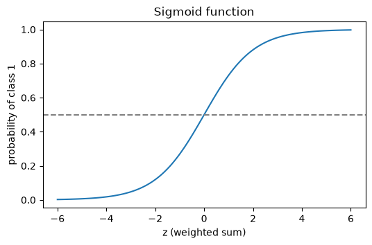
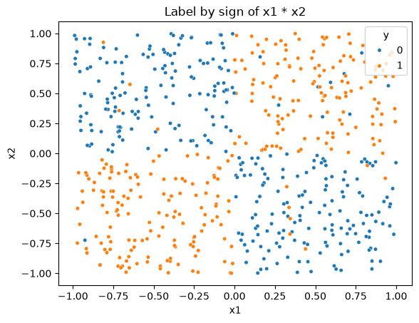
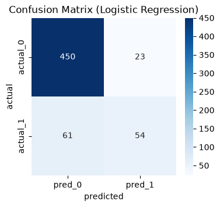
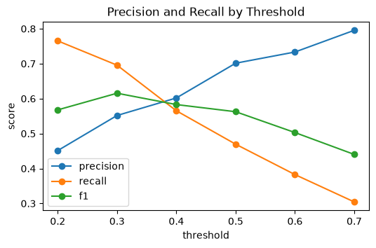

[7장] 머신러닝 (2): 분류 모델과 평가
비즈니스빅데이터분석
7장
머신러닝 (2): 분류 모델과 평가
2027학년도 「비즈니스빅데이터분석」의 준비 중인 교재입니다. 편집 상태를 검토하기 위해 미리 공개한 것으로, 수업 전에 내용과 순서가 바뀔 수 있습니다.
학사 9주차 · 교재 07 · 3부 AI 모델링 · 출제 분야: AI 모델링 > 머신러닝 모델 학습, 모델 성능 평가 및 시뮬레이션
AICE Associate의 분류 문항은 회귀 문항과 같은 형식으로 출제된다. 가이드가 모델과 하이퍼파라미터를 지정하고, 수험자는 그 설정으로 모델을 학습시킨 뒤 검증용 데이터의 지표를 산출하여 더 나은 모델을 고른다. 달라지는 것은 지표이다. 분류에서는 정확도 외에 정밀도, 재현율, F1, 오분류표를 읽을 수 있어야 하며, 목표 범주의 비율이 한쪽으로 치우친 자료에서는 정확도가 높아도 쓸모없는 모델이 있다는 점을 알아야 한다.
본 장은 공통 자료의 이탈 여부(churn)를 목표로 층화 분할을 다시 수행하고, 분류 모델 네 가지(로지스틱 회귀, 의사결정나무, 랜덤 포레스트, XGBoost)를 6장과 같은 생성·학습·예측의 형식으로 다룬다. 이어서 분류 지표 네 가지, 오분류표와 분류 보고서, 범주 불균형의 문제와 class_weight 인자를 설명한다. 본 장에서 학습시킨 랜덤 포레스트는 8장에서 격자 탐색과 변수 중요도의 대상이 된다.
학습 목표
- 범주형 목표 열에 대하여 층화 분할과 스케일링을 수행하고, 범주의 비율이 유지되었는지 확인한다.
- 로지스틱 회귀, 의사결정나무, 랜덤 포레스트, XGBoost 분류 모델을 지정된 하이퍼파라미터로 같은 형식에 따라 학습시킨다.
predict와predict_proba의 출력을 구분하고, 확률과 임계값으로 예측 범주가 정해지는 과정을 설명한다.- 정확도, 정밀도, 재현율, F1을 산출하여 모델의 지표 비교표를 작성하고, 지표에 따라 더 나은 모델의 이름을 답 변수에 저장한다.
- 오분류표의 행과 열을 읽고 분류 보고서의 각 값을 해석한다.
- 범주가 불균형한 자료에서 정확도만으로 판단하면 안 되는 이유를 기준 모델로 설명하고,
class_weight의 효과를 확인한다.
준비 사항
| 항목 | 내용 |
|---|---|
| 실습 노트북 | AICE_07장_실습_학생용.ipynb |
| 자료 | customers.csv(학기 공통 자료), loans.csv(시간 제한 문항용) |
| 앞 장과의 연계 | 3장의 정제본 df_clean, 4장의 인코딩본 df_enc, 5장의 층화 분할(5.3절), 6장의 생성·학습·예측 형식과 하이퍼파라미터 |
| 앞 과목과의 연계 | 「빅데이터 개론」 10~11장(분류 모델의 기본 실행, 지표의 수작업 계산) |
| 실습 환경 | 접속과 설치는 부록 A를 따른다. 4절은 xgboost가 필요하다 |
0. 실습 준비
본 장의 모든 예제는 3장과 4장의 처리를 마친 인코딩본 df_enc에서 시작한다. 실습 노트북은 그 처리를 첫 코드 셀에서 다시 실행하므로, 앞 장의 노트북을 열어 둘 필요가 없다. 아래 네 단계를 마친 뒤 1절로 넘어간다. 접속과 설치의 방법은 부록 A에 있다.
0-1. 노트북 열기
- 실습 환경에 접속하여
AICE_07장_실습_학생용.ipynb를 연다. - 메뉴에서 커널을 다시 시작하고 모든 출력을 지운다. 지난 수업의 변수가 남아 있으면 같은 이름의 변수가 다른 값을 가리켜 결과가 기준 값과 달라질 수 있기 때문이다.
- 노트북의 첫 설명 셀에서 세 부분(1부 따라 하기, 2부 중심 실습, 3부 시간 제한 문항)의 구성을 확인한다.
[그림 자리: 실습 노트북의 첫 화면과 커널 재시작 메뉴]
AICE_07장_실습_학생용.ipynb를 연 직후의 화면. 첫 설명 셀(표제와 세 부분의 안내), 첫 코드 셀, 메뉴의 커널 재시작과 출력 지우기 항목의 위치를 표시한다. 학교 실습 환경의 JupyterLab에서 찍는다.
0-2. 첫 코드 셀의 실행
첫 코드 셀은 3장의 정제(중복 행 제거, 결측치와 불가능한 값의 처리, 이상치 제거)와 4장의 인코딩(지역 표기의 정리, 순서형 변환, 원핫 인코딩)을 차례로 실행하고 인코딩본의 크기를 출력한다.
(2940, 26)- 확인 1 출력이
(2940, 26)이다. 행 수가 다르면 3장의 정제 단계가, 열 수가 다르면 4장의 인코딩 단계가 표준 처리 과정과 다른 것이다. 셀을 고치지 말고 노트북을 새로 받아 다시 실행한다.
0-3. 판과 자료 상태의 확인
다음 셀은 scikit-learn과 pandas의 판, 인코딩본의 결측치 수와 숫자가 아닌 열의 수를 출력한다.
# [예제 1]
import sklearn
print(sklearn.__version__, pd.__version__)
print(df_enc.isna().sum().sum(), df_enc.select_dtypes(exclude="number").shape[1])1.9.1 3.1.1
0 0첫 줄은 이 교재를 빌드한 환경의 판이다. 판이 다르면 일부 출력의 모양(경고 문구, 자료형 표시)이 다를 수 있으나 지표의 값은 같다. 둘째 줄의 두 값이 모두 0이어야 모델에 그대로 넣을 수 있다. 결측치가 남아 있으면 로지스틱 회귀가 오류를 내고, 문자열 열이 남아 있으면 모든 모델이 오류를 낸다.
- 확인 2 둘째 줄이
0 0이다.
[최신 자료 자리: 시험 환경의 scikit-learn과 xgboost의 판] 시험 환경(Jupyter 기반 시험 전용 페이지)에 설치된 scikit-learn, xgboost, pandas의 판. 확인할 곳은 AICE 공식 사이트의 Associate 안내(https://aice.study/info/aice/asso)와 사전 환경점검 화면. 이 교재의 출력은 scikit-learn 1.9.1, xgboost 3.4.1, pandas 3.1.1에서 얻은 것이다(2026-11-15). 판이 다르면 경고 문구와
get_params()의 표시가 다를 수 있으므로 수업 전에 다시 확인한다.
0-4. 앞 장의 되짚기
본 장은 6장의 생성·학습·예측 형식을 그대로 쓴다. 모델 클래스를 불러오고, 하이퍼파라미터를 인자 이름으로 지정하여 객체를 만들고, fit(X_train_s, y_train)으로 학습시킨 뒤 predict(X_valid_s)로 예측한다. 6장과 다른 점은 다음과 같다.
| 항목 | 6장(회귀) | 본 장(분류) |
|---|---|---|
| 목표 열 | annual_spend(실수) |
churn(0 또는 1) |
| 분할 | 무작위 분할 | 층화 분할(stratify=y) |
| 예측의 결과 | 실수 | 범주(0, 1)와 범주별 확률 |
| 지표 | MAE, RMSE, 결정 계수 | 정확도, 정밀도, 재현율, F1, 오분류표 |
- 확인 3 노트북에서
X_train,y_train같은 분할 변수가 아직 없다. 첫 코드 셀은 분할을 하지 않으며, 분류용 분할은 1절에서 새로 수행한다.
1. 층화 분할과 스케일링의 재수행
1.1 목표 열의 분포
공통 자료에는 목표 열이 둘이다. 6장에서는 annual_spend로 분할하였고, 본 장에서는 churn으로 다시 분할한다. 먼저 목표 열의 범주별 개수와 비율을 확인한다.
# [예제 2]
X = df_enc.drop(columns=["annual_spend", "churn"])
y = df_enc["churn"]
print(y.value_counts())
print(round(y.mean(), 3))churn
0 2367
1 573
Name: count, dtype: int64
0.1952,940명 가운데 이탈한 회원(1)은 573명이고 비율은 0.195(약 19.5%)이다. 0과 1로 된 열의 평균은 1의 비율이다. 이처럼 한 범주가 다른 범주보다 훨씬 적은 자료를 범주가 불균형한 자료라 한다. 이 비율은 7절에서 정확도의 한계를 설명하는 근거가 된다.
입력 X에서 annual_spend도 제외한다. annual_spend는 6장의 목표 열이고, 표준 처리 과정은 회귀와 분류의 입력을 같은 24개 열로 맞추기로 정하였다. 시험에서는 가이드가 입력에서 뺄 열을 지정한다.
결과 읽기
| 묻는 것 | 읽는 자리 | 이 출력의 값 |
|---|---|---|
| 범주는 몇 개인가 | value_counts()의 행 수 |
2개(0, 1) |
| 다수 범주와 그 개수 | 첫 행 | 0(유지), 2367명 |
| 소수 범주와 그 개수 | 둘째 행 | 1(이탈), 573명 |
| 양성 범주의 비율 | y.mean() |
0.195 |
- 확인 4 두 개수의 합이 2940이고,
round(y.mean(), 3)이0.195이다.
1.2 층화 분할
# [예제 3]
X_train, X_valid, y_train, y_valid = train_test_split(X, y, test_size=0.2, random_state=42, stratify=y)
scaler = StandardScaler()
X_train_s = scaler.fit_transform(X_train)
X_valid_s = scaler.transform(X_valid)
print(X_train_s.shape, X_valid_s.shape)
print(round(y_train.mean(), 3), round(y_valid.mean(), 3))(2352, 24) (588, 24)
0.195 0.196stratify=y는 분할한 두 덩어리에서 y의 범주 비율이 원래 자료와 같게 유지되도록 행을 나눈다. 훈련용 0.195, 검증용 0.196으로 원래 비율(0.195)과 거의 같다. 스케일링은 5장과 같이 훈련용 데이터로 적합시키고 검증용 데이터에는 변환만 적용한다.
층화 분할이 이탈 회원을 어떻게 나누었는지는 두 덩어리의 범주별 개수로 확인한다.
# [예제 4]
print(y_train.value_counts())
print(y_valid.value_counts())churn
0 1894
1 458
Name: count, dtype: int64
churn
0 473
1 115
Name: count, dtype: int64손으로 계산하면 다음과 같다. 검증용 데이터는 2,940행의 20%인 588행이다. 층화 분할은 이탈 회원 573명도 같은 비율로 나누므로, 검증용에 들어갈 이탈 회원은 573 × 0.2 = 114.6명, 반올림하여 115명이다. 나머지 458명이 훈련용에 들어간다. 검증용의 이탈 비율은 115 / 588 = 0.1956, 훈련용은 458 / 2352 = 0.1947이고, 각각 소수 셋째 자리로 0.196과 0.195이다. 출력의 개수와 비율이 이 손 계산과 같다.
| 덩어리 | 행 수 | 유지(0) | 이탈(1) | 이탈 비율 |
|---|---|---|---|---|
| 전체 | 2,940 | 2,367 | 573 | 0.195 |
| 훈련용 | 2,352 | 1,894 | 458 | 0.195 |
| 검증용 | 588 | 473 | 115 | 0.196 |
- 확인 5 1.2절의 출력이
(2352, 24) (588, 24)와0.195 0.196이고, 검증용의 이탈 회원이 115명이다.
층화하지 않고 같은 시드로 나누면 다음과 같다.
# [예제 5]
X_tr2, X_va2, y_tr2, y_va2 = train_test_split(X, y, test_size=0.2, random_state=42)
print(round(y_tr2.mean(), 3), round(y_va2.mean(), 3))0.196 0.192이 자료에서는 검증용 비율이 0.192로 조금 낮아지는 정도이다. 그러나 이탈 회원이 적은 자료에서는 분할에 따라 검증용 데이터의 이탈 회원 수가 크게 달라질 수 있고, 그만큼 지표가 흔들린다. 분류 문제의 가이드는 대개 층화 조건을 지정한다. 층화 조건을 빠뜨리면 오류 없이 다른 행으로 분할되어 이후의 모든 지표가 기준 값과 달라진다.
| 인자 | 분류에서의 값 | 빠뜨리면 |
|---|---|---|
test_size |
가이드의 비율(예: 0.2) | 기본값 0.25로 분할된다 |
random_state |
가이드의 시드(예: 42) | 실행마다 다른 행으로 분할된다 |
stratify |
목표 열 y |
범주 비율이 유지되지 않는다. 오류는 나지 않는다 |
- 확인 6 층화하지 않은 분할의 검증용 비율이
0.192이고, 층화한 분할(0.196)과 다르다.
흔한 오류
1절의 실수는 대부분 오류 메시지 없이 지나간다. 그래서 확인 값(행 수와 이탈 비율)을 출력하여 기준과 대조하는 습관이 필요하다.
| 증상 | 실제 메시지 | 원인 | 대처 |
|---|---|---|---|
| 검증용 이탈 비율이 0.192 | (메시지 없음) | stratify=y를 빠뜨렸다 |
분할 셀에 stratify=y를 더하고 다시 실행한다 |
| 입력의 열이 25개 | (메시지 없음) | X에서 annual_spend를 빼지 않았다 |
drop(columns=["annual_spend", "churn"]) |
| 지표가 실행마다 다르다 | (메시지 없음) | random_state를 지정하지 않았다 |
분할과 모델에 random_state=42 |
| 검증용 행 수가 735 | (메시지 없음) | test_size를 빠뜨려 기본값 0.25가 쓰였다 |
test_size=0.2 |
노트북 1부의 연습 1을 푼다.
2. 로지스틱 회귀
2.1 모형과 학습
로지스틱 회귀(LogisticRegression)는 이름과 달리 분류 모델이다. 입력의 가중합(선형 회귀와 같은 꼴)을 0과 1 사이의 값으로 바꾸어 범주 1의 확률로 해석한다. predict는 가중합이 0보다 크면(확률이 0.5보다 크면) 1, 그렇지 않으면 0으로 예측한다. 가중합이 정확히 0이어서 확률이 0.5인 경우에는 0이다.
# [예제 6]
from sklearn.linear_model import LogisticRegression
log_model = LogisticRegression(max_iter=1000)
log_model.fit(X_train_s, y_train)
pred_log = log_model.predict(X_valid_s)
print(pred_log[:10])[1 1 0 0 0 0 0 0 0 0]생성·학습·예측의 형식은 6장과 같다. 예측값은 실수가 아니라 범주(0 또는 1)이다.
시그모이드 함수
가중합을 확률로 바꾸는 함수가 시그모이드(sigmoid, 로지스틱 함수)이다. 가중합을 z라 하면 확률은 1 / (1 + exp(-z))이다. scikit-learn의 사용자 안내서는 로지스틱 회귀가 결과의 확률을 로지스틱 함수로 모형화한다고 설명한다. 이 함수에는 세 가지 성질이 있다.
- z가 0이면 확률은 정확히 0.5이다. 따라서 “확률이 0.5보다 크다”는 “가중합이 0보다 크다”와 같은 말이다. scikit-learn의
predict는 이진 분류에서 가중합(decision_function)이 0보다 클 때 1로 정한다. 확률이 정확히 0.5이면 0이 된다(10장 6.2절의> 0.5와 같은 기준이다). - z가 커질수록 확률은 1에, 작아질수록 0에 가까워지지만 0과 1에 닿지는 않는다.
- z가 0 근처에서 조금만 달라져도 확률이 크게 바뀌고, z의 절댓값이 크면 확률은 거의 바뀌지 않는다.
z가 -2, -1, 0, 1, 2일 때를 손으로 계산하면, exp(2)는 약 7.389이므로 z = -2의 확률은 1 / (1 + 7.389) = 0.119이다. exp(1)은 약 2.718이므로 z = -1의 확률은 1 / 3.718 = 0.269이다. z = 0은 1 / 2 = 0.5이다. z = 1과 z = 2는 각각 1에서 0.269와 0.119를 뺀 0.731과 0.881이다. 같은 계산을 코드로 실행한다.
# [예제 11]
import numpy as np
z = np.array([-2, -1, 0, 1, 2])
print((1 / (1 + np.exp(-z))).round(3))[0.119 0.269 0.5 0.731 0.881]손 계산과 같다. 양수 z와 음수 z의 확률이 0.5를 중심으로 대칭이라는 것(0.269와 0.731, 0.119와 0.881의 합이 각각 1)도 확인할 수 있다. z의 범위를 넓혀 그래프로 그리면 다음과 같다.
# [예제 12]
import matplotlib.pyplot as plt
z_line = np.linspace(-6, 6, 121)
plt.figure(figsize=(6, 3.5))
plt.plot(z_line, 1 / (1 + np.exp(-z_line)))
plt.axhline(0.5, color="gray", linestyle="--")
plt.title("Sigmoid function")
plt.xlabel("z (weighted sum)")
plt.ylabel("probability of class 1")
가로선은 확률 0.5, 즉 기본 임계값이다. 곡선이 가로선과 만나는 곳의 z는 0이다. 7.3절에서 임계값을 0.3으로 낮추는 것은 이 가로선을 아래로 내리는 것과 같다. 그러면 더 작은 z에서도 1로 예측되므로 이탈로 예측하는 회원이 늘어난다.
- 확인 7 예제 11의 출력이
[0.119 0.269 0.5 0.731 0.881]이고, 그래프의 곡선이 z = 0에서 가로선(0.5)과 만난다.
2.2 predict_proba
predict_proba는 범주마다의 확률을 돌려준다. 결과는 (행 수, 범주 수) 모양의 배열이고, 열의 순서는 classes_ 속성의 순서이다.
# [예제 7]
proba_log = log_model.predict_proba(X_valid_s)
print(log_model.classes_)
proba_log[:5].round(3)[0 1]
array([[0.443, 0.557],
[0.432, 0.568],
[0.932, 0.068],
[0.99 , 0.01 ],
[0.922, 0.078]])classes_가 [0 1]이므로 첫째 열은 유지(0)의 확률, 둘째 열은 이탈(1)의 확률이다. 각 행의 두 값을 더하면 1이다. 첫 회원의 이탈 확률은 0.557이므로 1로 예측되었고, 셋째 회원은 0.068이므로 0으로 예측되었다. 이탈 확률만 필요하면 둘째 열을 proba_log[:, 1]로 꺼낸다.
결과 읽기
| 묻는 것 | 읽는 자리 | 이 출력의 값 |
|---|---|---|
| 열의 순서 | classes_ |
[0 1](첫째 열이 유지, 둘째 열이 이탈) |
| 첫 회원의 이탈 확률 | 첫 행 둘째 열 | 0.557 |
| 한 행의 두 확률의 합 | 첫 행의 두 값 | 0.443 + 0.557 = 1 |
| 이탈 확률이 가장 낮은 회원 | 다섯 행의 둘째 열 가운데 최솟값 | 넷째 회원, 0.01 |
| 0.5에 가장 가까운 회원 | 둘째 열이 0.5에 가까운 행 | 첫째 회원(0.557). 임계값을 0.6으로 올리면 0으로 바뀐다 |
확률은 예측의 확신의 정도를 보여 준다. 첫째와 둘째 회원은 1로 예측되었지만 확률이 0.557, 0.568로 0.5에 가까워, 임계값을 조금만 바꾸어도 예측이 뒤집힌다. 넷째 회원(0.01)은 어떤 합리적인 임계값에서도 0으로 예측된다. 7.3절의 임계값 표에서 인원(n_pos)이 임계값에 따라 달라지는 것은 이처럼 0.5 근처에 몰린 회원들 때문이다.
predict의 결과는 둘째 열이 0.5보다 큰지로 정한 것과 같다. 이 자료에는 확률이 정확히 0.5인 회원이 없으므로 >= 0.5로 비교하여도 결과가 같지만, 기준은 > 0.5이다.
# [예제 8]
pred_05 = (proba_log[:, 1] > 0.5).astype(int)
print((pred_05 == pred_log).all())True| 메서드 | 결과 | 모양 | 지표 함수에 넣는가 |
|---|---|---|---|
predict(X) |
예측 범주(0, 1) | (행 수,) | 넣는다 |
predict_proba(X) |
범주별 확률 | (행 수, 범주 수) | 넣지 않는다(5.4절) |
predict_proba(X)[:, 1] |
범주 1의 확률 | (행 수,) | 임계값을 정해 범주로 바꾼 뒤 넣는다(7.3절) |
확률의 계산 과정 확인
predict_proba의 값이 정말 시그모이드에 가중합을 넣은 값인지 확인한다. decision_function은 가중합 z를 돌려준다.
# [예제 13]
z_valid = log_model.decision_function(X_valid_s[:5])
print(z_valid.round(3))
print((1 / (1 + np.exp(-z_valid))).round(3))
print(proba_log[:5, 1].round(3))[ 0.23 0.274 -2.623 -4.59 -2.466]
[0.557 0.568 0.068 0.01 0.078]
[0.557 0.568 0.068 0.01 0.078]첫 줄이 검증용 앞 다섯 회원의 가중합, 둘째 줄이 그 값을 시그모이드에 넣은 값, 셋째 줄이 predict_proba의 둘째 열이다. 둘째 줄과 셋째 줄이 같다. 첫째와 둘째 회원은 가중합이 0.23, 0.274로 0보다 조금 크므로 확률이 0.5를 조금 넘고, 1로 예측되었다. 넷째 회원은 가중합이 -4.59로 매우 작아 확률이 0.01이다.
- 확인 8 예제 13의 둘째 줄과 셋째 줄이 같고, 첫 줄의 첫 값이
0.23이다.
계수의 부호 읽기 [선택]
가중합은 “절편 + 열마다 (계수 × 입력 값)의 합”이다. 학습이 끝난 모델의 coef_에 계수가, intercept_에 절편이 저장된다. 이 예제는 강의안에만 싣는다.
# [예제 14]
print(log_model.coef_.shape, log_model.intercept_.round(3))
z0 = (log_model.coef_[0] * X_valid_s[0]).sum() + log_model.intercept_[0]
print(round(z0, 3))
coef = pd.Series(log_model.coef_[0], index=X.columns).sort_values()
print(coef.head(3).round(3))
print(coef.tail(3).round(3))(1, 24) [-2.125]
0.23
visits_per_month -0.925
app_user -0.477
tenure_months -0.434
dtype: float64
avg_session_min 0.110
cs_calls 0.857
last_login_days 1.014
dtype: float64coef_의 모양 (1, 24)는 이진 분류에서 계수가 한 벌(입력 24열마다 하나)이라는 뜻이고, 절편은 -2.125이다. 첫 회원의 스케일링된 입력 24개에 계수를 곱해 더하고 절편을 더하면 0.23이 나와 decision_function의 첫 값과 같다.
스케일링한 입력으로 학습하였으므로 계수의 크기를 열끼리 견줄 수 있다. 계수가 양수인 열은 값이 클수록 가중합이 커져 이탈 확률이 오르고, 음수인 열은 반대이다. 출력의 아래쪽 세 줄에서 마지막 접속 이후 경과 일수(last_login_days, 1.014)와 고객센터 문의 수(cs_calls, 0.857)가 가장 큰 양수이다. 오래 접속하지 않고 문의가 많은 회원일수록 이탈 확률이 높게 계산된다. 위쪽 세 줄에서 월평균 방문 수(visits_per_month, -0.925)가 가장 큰 음수이다. 자주 방문하는 회원일수록 이탈 확률이 낮게 계산된다. 이 해석은 모델이 학습한 관계를 말할 뿐이고, 방문을 늘리면 이탈이 줄어든다는 인과를 보증하지 않는다. 8장의 변수 중요도에서 같은 열들이 다시 상위에 나타난다.
2.3 max_iter
로지스틱 회귀의 계수는 반복 계산으로 조금씩 고쳐 가며 찾는다. max_iter는 반복의 최대 횟수이고 기본값은 100이다. 학습이 끝난 모델의 n_iter_에 실제 반복 횟수가 저장된다.
# [예제 10]
print(LogisticRegression().fit(X_train_s, y_train).n_iter_)[9]스케일링한 입력에서는 9번 만에 계산이 수렴하였다. 스케일링하지 않은 입력에서는 열마다 값의 크기가 크게 달라 수렴이 느리다. 연습 3에서 확인하듯이 기본 설정으로는 100번을 모두 쓰고도 수렴하지 못하며, 이때 scikit-learn은 ConvergenceWarning을 출력한다. 경고는 오류가 아니어서 결과가 나오지만, 계수가 다 정해지지 않은 상태이므로 지표가 기준 값과 다를 수 있다. 이 경고가 나오면 입력이 스케일링되었는지 확인하고, 가이드에 따라 max_iter를 늘린다. 본 교재는 시험 문항의 관례에 따라 max_iter=1000을 지정한다.
수렴 경고의 실제 문구
노트북에서는 경고가 셀 아래에 분홍색 바탕으로 출력된다. 강의안에는 경고를 기록하여 그 종류와 첫 줄을 출력한다. 아래 셀의 with 문은 경고를 화면에 내지 않고 목록 w에 모으는 설명용 코드이며, 시험의 답안에 쓸 필요는 없다.
# [예제 15]
import warnings
with warnings.catch_warnings(record=True) as w:
warnings.simplefilter("always")
LogisticRegression().fit(X_train, y_train)
print(w[0].category.__name__)
print(str(w[0].message).splitlines()[0])ConvergenceWarning
lbfgs failed to converge after 100 iteration(s) (status=1):첫 줄 ConvergenceWarning이 경고의 종류이고, 둘째 줄은 lbfgs(로지스틱 회귀의 기본 최적화 방법)가 100번 반복한 뒤 멈추었다는 뜻이다. 경고의 뒷부분에는 반복 횟수를 늘리거나 데이터를 스케일링하라는 안내와 전처리 문서의 주소가 이어진다.
- 확인 9 노트북의 연습 3(
[선택])을 실행하면 셀 아래에ConvergenceWarning이 나타나고, 기본 설정의n_iter_가[100]이다.
흔한 오류
| 증상 | 실제 메시지(핵심 구절) | 원인 | 대처 |
|---|---|---|---|
| 셀 아래에 분홍색 경고 | ConvergenceWarning: lbfgs failed to converge after 100 iteration(s) |
스케일링하지 않았거나 max_iter가 작다 |
X_train_s로 학습, max_iter=1000 |
| 1로 예측된 회원이 거의 없다 | (메시지 없음) | 확률의 첫째 열(유지의 확률)로 임계값을 적용하였다 | classes_를 보고 [:, 1]을 쓴다 |
| 이탈 예측 인원이 기준 값과 크게 다르다 | UserWarning: X does not have valid feature names |
데이터프레임 X_train으로 학습하고 배열 X_valid_s로 예측하는 등 학습과 예측의 입력이 다르다 |
학습과 예측에 같은 종류(X_train_s와 X_valid_s)를 쓴다 |
ValueError: Unknown label type: continuous |
같은 문구 | 목표 열에 실수(예: annual_spend)를 넣었다 |
분류의 목표는 churn |
노트북 1부의 연습 2(확률에 의한 선택)를 푼다. 연습 3(max_iter)은 [선택]이다.
3. 의사결정나무와 랜덤 포레스트
3.1 의사결정나무 분류
의사결정나무 분류(DecisionTreeClassifier)는 6장의 회귀 나무와 같은 방식으로 데이터를 나눈다. 차이는 두 가지이다. 분기를 고르는 기준이 제곱 오차가 아니라 불순도(한 무리 안에 범주가 섞인 정도)이고, 잎의 예측값이 평균이 아니라 잎에 속한 훈련용 행의 범주 비율이다.
# [예제 16]
from sklearn.tree import DecisionTreeClassifier
tree_model = DecisionTreeClassifier(max_depth=5, random_state=42)
tree_model.fit(X_train_s, y_train)
pred_tree = tree_model.predict(X_valid_s)
tree_model.predict_proba(X_valid_s)[:5].round(3)array([[0.578, 0.422],
[0.578, 0.422],
[0.948, 0.052],
[0.976, 0.024],
[0.786, 0.214]])나무의 predict_proba는 그 행이 도착한 잎의 범주 비율이다. 첫째와 둘째 회원은 같은 잎(이탈 비율 0.422)에 도착하였다. 확률이 0.5보다 작으므로 둘 다 0으로 예측된다. 로지스틱 회귀는 같은 두 회원을 1로 예측하였다(2.2절). 모델에 따라 경계에 가까운 회원의 예측이 갈린다.
불순도의 기준은 criterion 인자로 정한다.
criterion |
뜻 |
|---|---|
"gini" (기본값) |
지니 불순도. 무작위로 고른 두 행의 범주가 다를 확률에 해당한다 |
"entropy", "log_loss" |
엔트로피. 범주가 고르게 섞일수록 크다 |
불순도의 계산
두 범주의 비율이 p와 1 - p인 무리에서 지니 불순도는 1 - (p² + (1 - p)²)이고, 엔트로피는 -(p × log2(p) + (1 - p) × log2(1 - p))이다. 회원 10명 가운데 3명이 이탈한 무리(비율 0.7과 0.3)를 손으로 계산하면 다음과 같다.
| 기준 | 계산 | 값 |
|---|---|---|
| 지니 불순도 | 1 - (0.7² + 0.3²) = 1 - (0.49 + 0.09) | 0.42 |
| 엔트로피 | -(0.7 × (-0.515) + 0.3 × (-1.737)) = 0.360 + 0.521 | 0.881 |
| 예제 16의 잎(0.578, 0.422)의 지니 | 1 - (0.334 + 0.178) | 0.488 |
# [예제 17]
p = np.array([0.7, 0.3])
print(round(1 - (p ** 2).sum(), 3), round(-(p * np.log2(p)).sum(), 3))
p_leaf = np.array([0.578, 0.422])
print(round(1 - (p_leaf ** 2).sum(), 3))0.42 0.881
0.488코드의 값이 손 계산과 같다. 한 범주만 있는 무리(비율 1과 0)는 두 기준 모두 0이고, 반반으로 섞인 무리(0.5와 0.5)는 지니 0.5, 엔트로피 1로 가장 크다. 나무는 분기 후보마다 “나누기 전의 불순도 - 나눈 뒤 두 무리의 불순도를 행 수로 가중 평균한 값”을 계산하여 가장 많이 줄어드는 분기를 고른다. 예제 16의 잎은 지니 0.488로 반반(0.5)에 가까운, 범주가 많이 섞인 잎이다. 깊이 5에서 성장을 멈추었기 때문에 더 나누지 못한 것이다.
- 확인 10 예제 17의 출력이
0.42 0.881과0.488이다.
# [예제 18]
tree_ent = DecisionTreeClassifier(criterion="entropy", max_depth=5, random_state=42)
tree_ent.fit(X_train_s, y_train)
pred_ent = tree_ent.predict(X_valid_s)
print((pred_ent != pred_tree).sum())51같은 깊이에서 기준만 바꾸어도 검증용 588행 가운데 51행의 예측이 달라졌다. 가이드가 criterion을 지정하면 그대로 따라야 같은 지표가 나온다. 지정하지 않으면 기본값 "gini"를 쓴다. max_depth, min_samples_split, random_state의 뜻은 6장과 같다.
3.2 랜덤 포레스트 분류
랜덤 포레스트 분류(RandomForestClassifier)는 여러 나무의 확률을 평균하여 확률로 쓰고, 그 확률이 가장 큰 범주를 예측한다.
# [예제 19]
from sklearn.ensemble import RandomForestClassifier
rf_model = RandomForestClassifier(n_estimators=100, random_state=42)
rf_model.fit(X_train_s, y_train)
pred_rf = rf_model.predict(X_valid_s)
rf_model.predict_proba(X_valid_s)[:5].round(3)array([[0.56, 0.44],
[0.7 , 0.3 ],
[0.86, 0.14],
[0.97, 0.03],
[0.88, 0.12]])나무 100그루의 평균이므로 확률이 0.01 단위로 나온다. 분류의 랜덤 포레스트는 회귀와 달리 분기마다 입력 열의 일부(기본값은 열 수의 제곱근, max_features="sqrt")만 후보로 쓴다. 나무들을 서로 더 다르게 만들기 위함이다.
숲의 확률은 나무 확률의 평균 [선택]
학습이 끝난 숲의 estimators_에는 나무 100그루가 들어 있다. 첫 회원에 대한 나무마다의 이탈 확률을 모두 더해 100으로 나누면 숲의 확률과 같아야 한다. 이 예제는 강의안에만 싣는다.
# [예제 20]
total = 0
for one_tree in rf_model.estimators_:
total = total + one_tree.predict_proba(X_valid_s[:1])[0, 1]
print(len(rf_model.estimators_), round(total / len(rf_model.estimators_), 3))100 0.44나무가 100그루이고, 평균 0.44는 예제 19의 첫 행 둘째 열(0.44)과 같다. 깊이 제한이 없는 나무는 잎이 대개 한 범주만 담으므로 나무 하나의 확률은 거의 0이나 1이다. 숲의 확률 0.44는 100그루 가운데 약 44그루가 이 회원을 이탈로 본다는 뜻에 가깝다.
| 모델 | 주요 인자와 기본값 |
|---|---|
LogisticRegression |
max_iter=100, class_weight=None |
DecisionTreeClassifier |
criterion="gini", max_depth=None, min_samples_split=2, random_state=None, class_weight=None |
RandomForestClassifier |
n_estimators=100, criterion="gini", max_depth=None, max_features="sqrt", random_state=None, class_weight=None |
- 확인 11 예제 18의 출력이
51이고, 예제 19의 첫 행이[0.56, 0.44]이다.
노트북 1부의 연습 4를 푼다.
4. XGBoost
4.1 부스팅과 scikit-learn 방식의 인터페이스
XGBoost는 나무를 하나씩 차례로 더해 가는 부스팅(boosting) 모델이다. 랜덤 포레스트가 나무들을 서로 독립적으로 학습시켜 평균하는 것과 달리, 부스팅은 앞의 나무들이 틀린 부분을 다음 나무가 보완하도록 학습시킨다. XGBoost는 scikit-learn과 같은 형식으로 쓸 수 있는 클래스(XGBClassifier, XGBRegressor)를 제공하며, 시험의 허용 사이트 목록에도 이 방식의 문서가 포함되어 있다.
# [예제 21]
from xgboost import XGBClassifier
xgb_model = XGBClassifier(n_estimators=100, learning_rate=0.1, max_depth=3, random_state=42, n_jobs=1)
xgb_model.fit(X_train_s, y_train)
pred_xgb = xgb_model.predict(X_valid_s)
print(pred_xgb[:10])[0 0 0 0 0 0 0 0 0 0]생성·학습·예측의 형식은 scikit-learn의 모델과 같다. 클래스를 xgboost 패키지에서 불러온다는 점만 다르다. 첫 10명은 모두 0으로 예측되었다. 확률을 보면 그 이유를 알 수 있다.
# [예제 22]
xgb_model.predict_proba(X_valid_s)[:5].round(3)array([[0.509, 0.491],
[0.515, 0.485],
[0.941, 0.059],
[0.977, 0.023],
[0.899, 0.101]], dtype=float32)첫째와 둘째 회원의 이탈 확률은 0.491, 0.485로 0.5에 조금 못 미친다. 로지스틱 회귀(2.2절)는 같은 두 회원에게 0.5보다 큰 확률을 주었다. 출력 끝의 dtype=float32는 XGBoost가 확률을 단정밀도 실수로 계산한다는 표시이다.
| 모델 | 첫 회원의 이탈 확률 | 예측 | 확률을 만드는 방식 |
|---|---|---|---|
| 로지스틱 회귀 | 0.557 | 1 | 가중합의 시그모이드 |
| 의사결정나무 | 0.422 | 0 | 도착한 잎의 이탈 비율 |
| 랜덤 포레스트 | 0.44 | 0 | 나무 100그루의 확률 평균 |
| XGBoost | 0.491 | 0 | 나무 100개의 점수 합의 시그모이드 |
같은 회원이라도 모델마다 확률이 다르고, 0.5 근처의 회원은 모델에 따라 예측이 갈린다.
- 확인 12 예제 21의 출력이
[0 0 0 0 0 0 0 0 0 0]이고, 예제 22의 첫 행이[0.509, 0.491]이다.xgboost가 없는 환경에서는 예제 21 셀에서ModuleNotFoundError가 나며, 이 경우 4절은 강의안의 출력으로 확인한다.
4.2 주요 인자
| 인자 | 뜻 | 기본값 |
|---|---|---|
n_estimators |
차례로 더하는 나무의 수 | Python API 문서에 값이 적혀 있지 않다. 가이드가 지정한 값을 쓴다 |
learning_rate |
나무 하나가 예측에 더하는 몫을 줄이는 비율. XGBoost의 eta와 같다 |
0.3(학습 매개변수 문서의 eta) |
max_depth |
나무 하나의 최대 깊이 | 6(학습 매개변수 문서) |
random_state |
난수 시드 | |
n_jobs |
학습에 쓰는 스레드의 수 |
get_params()로 기본값을 확인하면 None이 나온다.
# [예제 23]
params = XGBClassifier().get_params()
print(params["n_estimators"], params["learning_rate"], params["max_depth"])None None NoneNone은 “값을 지정하지 않았으므로 XGBoost 내부의 기본값을 쓴다”는 뜻이다. scikit-learn의 모델처럼 기본값이 get_params()에 드러나지 않으므로, 기본값이 필요하면 XGBoost의 학습 매개변수 문서에서 찾는다.
[그림 자리: XGBoost 문서의 Python API Reference에서 XGBClassifier의 인자 목록] 공식 문서(https://xgboost.readthedocs.io/en/stable/python/python_api.html)의
XGBClassifier항목에서n_estimators,max_depth,learning_rate의 설명이 보이는 부분. 시험 중에 인자 이름과 뜻을 찾는 경로(왼쪽 목차의 Python API Reference, 페이지 안 검색)를 화살표로 표시한다.
learning_rate를 작게 하면 나무 하나의 영향이 줄어 더 많은 나무가 필요하다. 그래서 learning_rate와 n_estimators는 함께 정한다. 본 장은 n_estimators=100, learning_rate=0.1, max_depth=3을 썼다. n_jobs=1은 공식 문서가 경고하는 스레드 경합(여러 작업이 같은 코어를 두고 다투어 학습이 크게 느려지는 현상)을 피하기 위한 설정이다. 여러 학생이 같은 실습 서버에서 동시에 학습시키는 수업 환경을 고려하였다. 시험에서는 가이드가 지정한 인자만 쓴다.
목표 열이 문자열일 때
scikit-learn의 분류 모델은 목표 열이 "stay", "churn" 같은 문자열이어도 학습한다. XGBoost의 XGBClassifier는 그렇지 않다. 목표 열의 범주가 0부터 시작하는 정수여야 한다. 아래 셀은 목표 열을 문자열로 바꾸어 학습시킨 경우이다.
# [예제 24]
y_text = y_train.map({0: "stay", 1: "churn"})
XGBClassifier(n_estimators=10, random_state=42, n_jobs=1).fit(X_train_s, y_text)ValueError: Invalid classes inferred from unique values of `y`. Expected: [0 1], got ['churn' 'stay']메시지는 “목표의 고유값에서 범주를 추론하였는데 [0 1]을 기대하였으나 ['churn' 'stay']를 받았다”는 뜻이다. 대처는 목표 열을 정수로 바꾸는 것이다. 4장에서 배운 LabelEncoder를 쓰면 다음과 같다(강의안 전용 예제).
# [예제 25]
from sklearn.preprocessing import LabelEncoder
y_text = y_train.map({0: "stay", 1: "churn"})
le = LabelEncoder()
y_code = le.fit_transform(y_text)
print(le.classes_)
print(y_text.head(3).tolist(), y_code[:3])
print(y_text.map({"stay": 0, "churn": 1}).head(3).tolist())['churn' 'stay']
['churn', 'stay', 'stay'] [0 1 1]
[1, 0, 0]LabelEncoder는 범주를 알파벳 순서로 정렬하여 번호를 매기므로 churn이 0, stay가 1이 되었다. 둘째 줄에서 첫 회원(churn)이 0으로 바뀐 것이 보인다. 이렇게 바꾸면 오류는 사라지지만 양성 범주가 뒤집혀, 정밀도와 재현율이 “유지 회원을 찾는 능력”을 재게 된다. 이탈을 1로 두려면 셋째 줄처럼 map({"stay": 0, "churn": 1})로 번호를 직접 정한다. 시험의 가이드가 인코딩 방법을 지정하면 그대로 따르고, 지정하지 않으면 양성 범주가 1이 되었는지 확인한다.
노트북 1부의 연습 7([선택], 학습률의 변경)은 5절의 지표를 배운 뒤 푼다.
4.4 [선택] 선형 경계로 나눌 수 없는 자료
이 장의 공통 자료에서는 로지스틱 회귀가 정확도와 F1 모두에서 가장 높다(5절, 8절). 이것은 로지스틱 회귀가 언제나 낫다는 뜻이 아니다. 실습 자료(customers.csv)는 이탈 여부를 입력들의 가중합에 가까운 규칙으로 생성하였으므로, 가중합으로 예측하는 로지스틱 회귀에 유리하다. 자료의 관계가 가중합으로 표현되지 않으면 결과가 달라진다. 이 소절은 그런 자료 하나를 만들어 네 모델을 비교한다.
아래 가상 자료는 두 입력 x1, x2(각각 -1에서 1 사이)의 곱이 양수이면 1, 음수이면 0이다. 좌표 평면의 오른쪽 위와 왼쪽 아래가 1, 나머지 두 사분면이 0이다. 측정의 잡음을 흉내 내기 위하여 행의 약 5%는 범주를 뒤집었다.
# [예제 26]
import numpy as np
from sklearn.model_selection import train_test_split
rng = np.random.default_rng(42)
xor = pd.DataFrame({"x1": rng.uniform(-1, 1, 600), "x2": rng.uniform(-1, 1, 600)})
xor["y"] = ((xor["x1"] * xor["x2"]) > 0).astype(int)
flip = rng.random(600) < 0.05
xor.loc[flip, "y"] = 1 - xor.loc[flip, "y"]
Xa_train, Xa_valid, ya_train, ya_valid = train_test_split(
xor[["x1", "x2"]], xor["y"], test_size=0.3, random_state=42, stratify=xor["y"])
print(round(xor["y"].mean(), 3), Xa_train.shape, Xa_valid.shape)0.483 (420, 2) (180, 2)# [예제 27]
import seaborn as sns
import matplotlib.pyplot as plt
sns.scatterplot(data=xor, x="x1", y="x2", hue="y", s=15)
plt.title("Label by sign of x1 * x2")
plt.show()
# [예제 28]
from sklearn.linear_model import LogisticRegression
from sklearn.tree import DecisionTreeClassifier
from sklearn.ensemble import RandomForestClassifier
from sklearn.metrics import accuracy_score, f1_score
models_a = {
"LogisticRegression": LogisticRegression(),
"DecisionTreeClassifier": DecisionTreeClassifier(max_depth=4, random_state=42),
"RandomForestClassifier": RandomForestClassifier(random_state=42),
"XGBClassifier": XGBClassifier(n_estimators=100, max_depth=3, n_jobs=1, random_state=42),
}
rows = []
for name in models_a: # 네 모델을 같은 자료로 학습시키고 검증용 지표를 모은다
m = models_a[name].fit(Xa_train, ya_train)
p = m.predict(Xa_valid)
rows.append([name, round(accuracy_score(ya_valid, p), 3), round(f1_score(ya_valid, p), 3)])
pd.DataFrame(rows, columns=["model", "accuracy", "f1"]) model accuracy f1
0 LogisticRegression 0.511 0.421
1 DecisionTreeClassifier 0.950 0.949
2 RandomForestClassifier 0.956 0.955
3 XGBClassifier 0.961 0.960결과 읽기
| 묻는 것 | 읽는 자리 | 이 출력의 값 |
|---|---|---|
| 1의 비율 | 예제 26의 첫 값 | 0.483(두 범주가 거의 반반) |
| 로지스틱 회귀의 정확도 | 표의 첫 행 | 0.511 |
| 나무 계열의 정확도 | 표의 둘째~넷째 행 | 0.950, 0.956, 0.961 |
두 범주가 반반인 자료에서 정확도 0.511은 동전을 던져 맞히는 수준이다. 로지스틱 회귀의 판단 경계는 가중합이 0인 곳, 즉 평면 위의 직선 하나이다(2절). 대각선 방향의 두 사분면을 한 범주로 묶으려면 직선 하나로는 부족하다. 의사결정나무는 “x1이 0보다 큰가”, 이어서 “x2가 0보다 큰가”처럼 기준을 차례로 걸어 사분면을 하나씩 나눌 수 있으므로, 깊이 4의 나무 하나로도 0.95에 이른다. 랜덤 포레스트와 XGBoost는 나무를 여럿 모아 같은 일을 조금 더 안정적으로 한다.
이 비교에서 얻을 것은 두 가지이다. 첫째, 어느 모델이 나은지는 자료의 모양에 달려 있으므로 시험에서는 가이드가 지정한 모델을 쓰고, 비교를 요구하면 검증용 지표로 판단한다. 둘째, 로지스틱 회귀가 지는 자료라도 두 입력의 곱(x1 * x2)을 새 열로 더해 주면 가중합으로 표현할 수 있다. 이처럼 입력을 가공하여 관계를 드러내는 일을 특성 공학(feature engineering)이라 하며, 본 과목의 시험 범위를 넘으므로 이름만 소개한다.
5. 분류 지표
5.1 네 가지 지표
이탈(1)을 찾아야 할 범주(양성)로 보면, 검증용 회원은 실제 범주와 예측 범주에 따라 넷으로 나뉜다.
| 예측 0 | 예측 1 | |
|---|---|---|
| 실제 0 | TN(참 음성): 유지를 유지로 | FP(거짓 양성): 유지를 이탈로 |
| 실제 1 | FN(거짓 음성): 이탈을 유지로 | TP(참 양성): 이탈을 이탈로 |
네 지표는 이 네 수로 계산한다.
| 지표 | 계산 | 묻는 것 | 함수 |
|---|---|---|---|
| 정확도 | (TP + TN) / 전체 | 전체 가운데 맞힌 비율 | accuracy_score |
| 정밀도 | TP / (TP + FP) | 이탈로 예측한 회원 가운데 실제 이탈의 비율 | precision_score |
| 재현율 | TP / (TP + FN) | 실제 이탈 회원 가운데 이탈로 찾아낸 비율 | recall_score |
| F1 | 2 × 정밀도 × 재현율 / (정밀도 + 재현율) | 정밀도와 재현율의 조화 평균 | f1_score |
작은 예의 손 계산
회원 10명 가운데 실제 이탈이 4명(앞의 넷)이고, 모델이 앞의 셋과 다섯째·여섯째 회원을 이탈로 예측하였다고 가정한다.
| 회원 | 1 | 2 | 3 | 4 | 5 | 6 | 7 | 8 | 9 | 10 |
|---|---|---|---|---|---|---|---|---|---|---|
| 실제 | 1 | 1 | 1 | 1 | 0 | 0 | 0 | 0 | 0 | 0 |
| 예측 | 1 | 1 | 1 | 0 | 1 | 1 | 0 | 0 | 0 | 0 |
| 칸 | TP | TP | TP | FN | FP | FP | TN | TN | TN | TN |
네 칸을 세면 TP 3, FN 1, FP 2, TN 4이다. 정확도는 (3 + 4) / 10 = 0.7, 정밀도는 3 / (3 + 2) = 0.6, 재현율은 3 / (3 + 1) = 0.75이다. F1은 2 × 0.6 × 0.75 / (0.6 + 0.75) = 0.9 / 1.35 = 0.667이다. F1은 2 × TP / (2 × TP + FP + FN) = 6 / 9로도 같은 값이 나온다.
# [예제 30]
from sklearn.metrics import accuracy_score, precision_score, recall_score, f1_score
y_true10 = [1, 1, 1, 1, 0, 0, 0, 0, 0, 0]
y_hat10 = [1, 1, 1, 0, 1, 1, 0, 0, 0, 0]
print(accuracy_score(y_true10, y_hat10), precision_score(y_true10, y_hat10))
print(recall_score(y_true10, y_hat10), round(f1_score(y_true10, y_hat10), 3))0.7 0.6
0.75 0.667함수의 값이 손 계산과 같다. 이 예에서 정밀도(0.6)와 재현율(0.75)이 다른 까닭은 분모가 다르기 때문이다. 정밀도의 분모는 “이탈로 예측한 5명”, 재현율의 분모는 “실제 이탈한 4명”이다.
- 확인 13 예제 30의 출력이
0.7 0.6과0.75 0.667이다.
이제 검증용 588명에 같은 함수를 적용한다.
# [예제 31]
from sklearn.metrics import accuracy_score, precision_score, recall_score, f1_score
print("정확도", round(accuracy_score(y_valid, pred_log), 3))
print("정밀도", round(precision_score(y_valid, pred_log), 3))
print("재현율", round(recall_score(y_valid, pred_log), 3))
print("F1 ", round(f1_score(y_valid, pred_log), 3))정확도 0.857
정밀도 0.701
재현율 0.47
F1 0.562로지스틱 회귀는 전체의 85.7%를 맞혔다. 이탈로 예측한 회원의 70.1%가 실제로 이탈하였고(정밀도), 실제 이탈 회원의 47.0%를 찾아냈다(재현율). F1은 두 값의 조화 평균 0.562이다. 조화 평균은 두 값 가운데 작은 쪽에 가깝게 나오므로, 정밀도와 재현율 가운데 하나만 높은 모델은 F1이 낮다.
정밀도, 재현율, F1은 기본적으로 범주 1(pos_label=1)을 양성으로 보고 계산한다. 이진 분류에서 목표 열이 0과 1이면 따로 지정할 필요가 없다.
정밀도와 재현율 가운데 무엇을 보는가
두 지표는 서로 다른 실수를 센다. 정밀도는 거짓 양성(유지할 회원을 이탈로 본 것)이 적을수록, 재현율은 거짓 음성(이탈할 회원을 놓친 것)이 적을수록 높다. 어느 실수가 더 비싼가는 업무가 정한다. 이탈 예측의 결과로 회사가 하는 일을 “이탈로 예측된 회원에게 할인 쿠폰을 보낸다”로 두면 다음과 같다.
| 업무의 조건 | 더 비싼 실수 | 우선할 지표 | 이유 |
|---|---|---|---|
| 쿠폰 비용이 작고, 회원 한 명이 떠나면 연간 구매액을 잃는다 | 거짓 음성(놓친 이탈) | 재현율 | 쿠폰을 조금 더 보내는 비용보다 떠난 회원의 매출이 크다 |
| 상담원이 전화로 한 명씩 연락하며, 상담 인력이 하루 20명분뿐이다 | 거짓 양성(헛된 연락) | 정밀도 | 연락할 수 있는 인원이 정해져 있어 맞는 회원에게 써야 한다 |
| 두 비용이 비슷하거나 모른다 | 둘 다 | F1 | 한쪽만 높은 모델을 피한다 |
로지스틱 회귀의 재현율 0.47은 실제 이탈 회원 115명 가운데 54명만 찾았다는 뜻이다. 쿠폰 업무라면 61명을 놓치는 것이 문제이므로 7절의 방법(가중치, 임계값)으로 재현율을 올리는 쪽을 검토한다. 시험에서는 가이드가 지표를 지정하므로 이 판단을 직접 하지 않지만, 해석 문항에서 “이 모델을 업무에 쓸 수 있는가”를 물으면 이 표의 논리로 답한다.
- 확인 14 예제 31의 출력이
정확도 0.857,정밀도 0.701,재현율 0.47,F1 0.562이다.
5.2 인자의 순서
분류 지표 함수도 (실제 값, 예측값)의 순서로 인자를 받는다. 순서를 바꾸면 정밀도와 재현율이 서로 바뀐다. 정밀도의 분모(예측 1의 수)와 재현율의 분모(실제 1의 수)가 자리를 바꾸기 때문이다.
# [예제 32]
print(round(precision_score(pred_log, y_valid), 3))
print(round(recall_score(y_valid, pred_log), 3))0.47
0.47순서를 바꾼 정밀도가 재현율(0.47)과 같다. 오류 없이 틀린 값이 나오므로, 지표 함수는 언제나 y_valid를 먼저 쓴다. 정확도와 F1은 순서를 바꾸어도 값이 같다.
5.3 지표 비교표
세 모델의 지표를 한 표에 모은다. 인덱스에 모델의 클래스 이름을 둔다.
# [예제 33]
scores = pd.DataFrame({
"accuracy": [accuracy_score(y_valid, pred_log), accuracy_score(y_valid, pred_tree), accuracy_score(y_valid, pred_rf)],
"precision": [precision_score(y_valid, pred_log), precision_score(y_valid, pred_tree), precision_score(y_valid, pred_rf)],
"recall": [recall_score(y_valid, pred_log), recall_score(y_valid, pred_tree), recall_score(y_valid, pred_rf)],
"f1": [f1_score(y_valid, pred_log), f1_score(y_valid, pred_tree), f1_score(y_valid, pred_rf)],
}, index=["LogisticRegression", "DecisionTreeClassifier", "RandomForestClassifier"])
scores.round(3) accuracy precision recall f1
LogisticRegression 0.857 0.701 0.470 0.562
DecisionTreeClassifier 0.813 0.534 0.339 0.415
RandomForestClassifier 0.835 0.714 0.261 0.382XGBoost가 설치된 환경에서는 같은 표에 행을 하나 더한다. loc[새 인덱스] = 값의 리스트는 데이터프레임의 끝에 행을 추가한다.
# [예제 34]
scores.loc["XGBClassifier"] = [accuracy_score(y_valid, pred_xgb), precision_score(y_valid, pred_xgb),
recall_score(y_valid, pred_xgb), f1_score(y_valid, pred_xgb)]
scores.round(3) accuracy precision recall f1
LogisticRegression 0.857 0.701 0.470 0.562
DecisionTreeClassifier 0.813 0.534 0.339 0.415
RandomForestClassifier 0.835 0.714 0.261 0.382
XGBClassifier 0.837 0.646 0.365 0.467# [예제 35]
print(scores["f1"].idxmax())
print(scores["accuracy"].idxmax())LogisticRegression
LogisticRegression이 표에서 다음을 읽는다.
- 정확도와 F1이 모두 가장 높은 모델은 로지스틱 회귀(0.857, 0.562)이다. 6장의 회귀와 마찬가지로 이 자료의 이탈 여부가 입력의 가중합에 가까운 규칙으로 생성되었기 때문으로 보인다.
- 랜덤 포레스트는 정확도(0.835)가 의사결정나무(0.813)보다 높지만 F1(0.382)은 더 낮다. 정밀도(0.714)는 가장 높으나 재현율(0.261)이 가장 낮다. 이탈로 예측하는 회원이 적어서, 예측한 것은 잘 맞히지만 실제 이탈 회원의 대부분을 놓친다.
- XGBoost(F1 0.467)는 랜덤 포레스트보다 재현율이 높고 로지스틱 회귀보다는 낮다.
- 어느 지표로 고르는가에 따라 답이 달라질 수 있다. 정확도와 F1의 1위는 이 표에서는 같지만 언제나 같지는 않다. 가이드가 지정한 지표로 고르고, 이름은
idxmax()로 구한다.
결과 읽기
| 묻는 것 | 읽는 자리 | 이 출력의 값 |
|---|---|---|
| F1이 가장 높은 모델 | f1 열의 최댓값의 행 이름 |
LogisticRegression(0.562) |
| 이탈로 예측한 것이 가장 잘 맞는 모델 | precision 열의 최댓값 |
RandomForestClassifier(0.714) |
| 실제 이탈을 가장 많이 찾는 모델 | recall 열의 최댓값 |
LogisticRegression(0.470) |
| 정확도 1위와 F1 1위가 같은가 | 예제 35의 두 줄 | 같다(둘 다 LogisticRegression) |
- 확인 15 예제 33의 표가 3행 4열이고, 예제 35의 두 줄이 같은 이름이다.
5.4 확률을 넣는 오류
지표 함수에는 예측 범주(predict의 결과)를 넣는다. 확률(predict_proba의 결과)을 넣으면 오류가 난다.
# [예제 36]
f1_score(y_valid, proba_log)ValueError: Classification metrics can't handle a mix of binary and continuous-multioutput targets메시지의 binary는 실제 값(0과 1), continuous-multioutput은 확률의 두 열을 가리킨다. 두 종류를 비교할 수 없다는 뜻이다. predict_proba를 predict로 바꾸어 정정한다. 둘째 열만 넣어도(proba_log[:, 1]) continuous 목표라는 같은 종류의 오류가 난다.
다중 범주와 average 인자 [선택]
정밀도, 재현율, F1 함수의 average 인자는 기본값이 "binary"이다. 공식 문서는 이 값이 목표가 이진일 때에만 쓸 수 있다고 설명한다. 범주가 셋 이상인 목표(예: 시간 제한 문항 자료 laptops.csv의 sell_speed의 fast, normal, slow)에 기본값 그대로 쓰면 오류가 난다.
# [예제 37]
y3_true = ["fast", "fast", "fast", "normal", "normal", "slow", "slow"]
y3_pred = ["fast", "fast", "normal", "normal", "slow", "slow", "slow"]
precision_score(y3_true, y3_pred)ValueError: Target is multiclass but average='binary'. Please choose another average setting, one of [None, 'micro', 'macro', 'weighted'].메시지는 “목표가 다중 범주인데 average='binary'이다. None, 'micro', 'macro', 'weighted' 가운데 하나를 고르라”는 뜻이다. 손으로 범주마다의 정밀도를 구하면 다음과 같다. fast로 예측한 둘(1, 2번)은 모두 fast이므로 1.0, normal로 예측한 둘(3, 4번) 가운데 normal은 하나이므로 0.5, slow로 예측한 셋(5, 6, 7번) 가운데 slow는 둘이므로 0.667이다. macro는 세 값의 단순 평균 (1.0 + 0.5 + 0.667) / 3 = 0.722이고, weighted는 실제 개수(3, 2, 2)로 가중한 평균 (3 × 1.0 + 2 × 0.5 + 2 × 0.667) / 7 = 0.762이다. 같은 계산을 코드로 확인한다(강의안 전용 예제).
# [예제 38]
print(precision_score(y3_true, y3_pred, average=None).round(3))
print(round(precision_score(y3_true, y3_pred, average="macro"), 3))
print(round(precision_score(y3_true, y3_pred, average="weighted"), 3))[1. 0.5 0.667]
0.722
0.762average=None은 범주마다의 값을 배열로 돌려주고, 배열의 순서는 범주의 정렬 순서(fast, normal, slow)이다. 시험의 다중 분류 문항은 가이드가 average의 값을 지정한다. 지정된 문자열을 그대로 쓴다. 6.2절의 분류 보고서에 나오는 macro avg, weighted avg가 바로 이 두 평균이다.
- 확인 16 예제 37에서
ValueError: Target is multiclass but average='binary'가 나고, 예제 38의 둘째와 셋째 줄이0.722,0.762이다.
흔한 오류
| 증상 | 실제 메시지(핵심 구절) | 원인 | 대처 |
|---|---|---|---|
| 지표 함수에서 오류 | ValueError: Classification metrics can't handle a mix of binary and continuous-multioutput targets(두 열을 넣은 경우) 또는 ... binary and continuous targets(한 열을 넣은 경우) |
예측 대신 predict_proba의 결과를 넣었다 |
predict의 결과를 넣거나, 확률을 임계값으로 범주로 바꾼 뒤 넣는다(7.3절) |
| 다중 범주에서 오류 | ValueError: Target is multiclass but average='binary' |
average를 지정하지 않았다 |
가이드의 average("macro" 등) |
| 정밀도와 재현율이 바뀌었다 | (메시지 없음) | 인자 순서를 (예측, 실제)로 썼다 |
언제나 (y_valid, pred) |
| 정밀도 0과 경고 | UndefinedMetricWarning: Precision is ill-defined |
이탈로 예측한 행이 하나도 없다 | 7.1절. zero_division=0 |
노트북 1부의 연습 5(F1의 직접 계산)를 푼다. 연습 6(재현율로 고르기)과 연습 7은 [선택]이다.
6. 오분류표와 분류 보고서
6.1 오분류표
오분류표(혼동 행렬, confusion matrix)는 5.1절의 네 수를 표로 나타낸 것이다. confusion_matrix(실제 값, 예측값)으로 구한다.
# [예제 39]
from sklearn.metrics import confusion_matrix, classification_report
cm = confusion_matrix(y_valid, pred_log)
cmarray([[450, 23],
[ 61, 54]])scikit-learn의 오분류표는 행이 실제 범주, 열이 예측 범주이다. 행과 열의 순서는 범주의 정렬 순서(0, 1)이다. 따라서 이진 분류의 오분류표는 다음 위치에 네 수가 놓인다. 교재나 다른 도구에 따라 행과 열을 반대로 그리는 경우가 있으므로, scikit-learn의 출력을 읽을 때에는 이 방향을 기억한다.
| 열 0: 예측 0 | 열 1: 예측 1 | |
|---|---|---|
| 행 0: 실제 0 | cm[0, 0] TN |
cm[0, 1] FP |
| 행 1: 실제 1 | cm[1, 0] FN |
cm[1, 1] TP |
[그림 자리: 오분류표의 네 칸과 지표의 분모] 2행 2열의 격자에 행(실제 0, 실제 1)과 열(예측 0, 예측 1)의 이름을 붙이고, 네 칸에 TN 450, FP 23, FN 61, TP 54를 적은 도식. 정밀도의 분모(예측 1의 열, FP + TP = 77)를 세로 테두리로, 재현율의 분모(실제 1의 행, FN + TP = 115)를 가로 테두리로 감싸 두 분모가 다른 방향임을 보인다. 정확도는 대각선(TN, TP)을 강조한다. 도식 도구로 그린다.
행과 열에 이름을 붙이면 혼동이 줄어든다.
# [예제 40]
pd.DataFrame(cm, index=["actual_0", "actual_1"], columns=["pred_0", "pred_1"]) pred_0 pred_1
actual_0 450 23
actual_1 61 54실제 유지 473명 가운데 450명을 유지로, 23명을 이탈로 예측하였다. 실제 이탈 115명 가운데 61명을 놓치고(FN) 54명을 찾아냈다(TP). ravel()로 배열을 펼치면 TN, FP, FN, TP의 순서로 꺼낼 수 있고, 이 네 수로 정밀도와 재현율을 다시 계산하면 5.1절과 같다.
# [예제 41]
tn, fp, fn, tp = cm.ravel()
print(tn, fp, fn, tp)
print(round(tp / (tp + fp), 3), round(tp / (tp + fn), 3))450 23 61 54
0.701 0.47결과 읽기
| 칸 | 읽는 자리 | 이 출력의 값 | 업무의 말 |
|---|---|---|---|
| TN | 행 actual_0, 열 pred_0 |
450 | 남을 회원을 남는다고 맞힌 수 |
| FP | 행 actual_0, 열 pred_1 |
23 | 남을 회원에게 쓸데없이 쿠폰을 보낸 수 |
| FN | 행 actual_1, 열 pred_0 |
61 | 떠날 회원을 놓친 수 |
| TP | 행 actual_1, 열 pred_1 |
54 | 떠날 회원을 찾아낸 수 |
| 행의 합 | 행마다 더한다 | 473, 115 | 실제 범주별 인원(분류 보고서의 support) |
| 열의 합 | 열마다 더한다 | 511, 77 | 예측 범주별 인원(pred_log.sum()이 77) |
네 칸에서 네 지표로
네 칸의 값으로 네 지표를 모두 손으로 계산한다.
| 지표 | 손 계산 | 값 |
|---|---|---|
| 정확도 | (54 + 450) / 588 = 504 / 588 | 0.857 |
| 정밀도 | 54 / (54 + 23) = 54 / 77 | 0.701 |
| 재현율 | 54 / (54 + 61) = 54 / 115 | 0.470 |
| F1 | 2 × 54 / (2 × 54 + 23 + 61) = 108 / 192 | 0.562 |
같은 계산을 코드로 하고, 첫 줄(손 계산)과 둘째 줄(함수)을 견준다.
# [예제 42]
acc_hand = (tp + tn) / (tp + tn + fp + fn)
prec_hand = tp / (tp + fp)
rec_hand = tp / (tp + fn)
f1_hand2 = 2 * prec_hand * rec_hand / (prec_hand + rec_hand)
print(round(acc_hand, 3), round(prec_hand, 3), round(rec_hand, 3), round(f1_hand2, 3))
print(round(accuracy_score(y_valid, pred_log), 3), round(precision_score(y_valid, pred_log), 3),
round(recall_score(y_valid, pred_log), 3), round(f1_score(y_valid, pred_log), 3))0.857 0.701 0.47 0.562
0.857 0.701 0.47 0.562두 줄이 같다. 지표 함수는 내부에서 이 네 칸을 세어 같은 식으로 계산한다. 네 칸을 알면 함수 없이도 모든 지표를 낼 수 있고, 거꾸로 지표가 이상하면 오분류표를 먼저 본다.
같은 표를 그림으로 그리면 칸의 크기가 색으로 드러난다. 시험의 그래픽 출력 문항에서 오분류표를 그리게 할 때 이 형식을 쓴다.
# [예제 46]
import seaborn as sns
plt.figure(figsize=(4, 3.5))
sns.heatmap(cm, annot=True, fmt="d", cmap="Blues", xticklabels=["pred_0", "pred_1"], yticklabels=["actual_0", "actual_1"])
plt.title("Confusion Matrix (Logistic Regression)")
plt.xlabel("predicted")
plt.ylabel("actual")
annot=True는 칸에 숫자를, fmt="d"는 숫자를 정수로 표시한다. xticklabels와 yticklabels로 축의 이름표를 붙였다. 세로축이 실제, 가로축이 예측이라는 방향은 confusion_matrix의 출력과 같다.
- 확인 17 예제 41의 첫 줄이
450 23 61 54이고, 예제 42의 두 줄이 모두0.857 0.701 0.47 0.562이다.
6.2 분류 보고서
classification_report는 범주마다의 정밀도, 재현율, F1과 개수를 한 번에 문자열로 만든다. 문자열이므로 print로 출력한다.
# [예제 43]
print(classification_report(y_valid, pred_log)) precision recall f1-score support
0 0.88 0.95 0.91 473
1 0.70 0.47 0.56 115
accuracy 0.86 588
macro avg 0.79 0.71 0.74 588
weighted avg 0.85 0.86 0.85 588| 행과 열 | 뜻 |
|---|---|
0, 1 행 |
그 범주를 양성으로 보았을 때의 정밀도, 재현율, F1. 1 행의 값이 5.1절의 값이다 |
support |
검증용 데이터에서 그 범주의 실제 개수(473, 115) |
accuracy |
정확도. 범주와 관계없는 값이어서 한 칸만 있다 |
macro avg |
두 범주의 값을 단순 평균한 것. 작은 범주도 같은 무게로 반영된다 |
weighted avg |
support로 가중 평균한 것. 큰 범주(0)의 값에 가깝다 |
기본 출력은 소수 둘째 자리이다. digits로 자릿수를, target_names로 범주의 이름을 지정한다.
# [예제 44]
print(classification_report(y_valid, pred_log, target_names=["stay", "churn"], digits=3)) precision recall f1-score support
stay 0.881 0.951 0.915 473
churn 0.701 0.470 0.562 115
accuracy 0.857 588
macro avg 0.791 0.710 0.739 588
weighted avg 0.846 0.857 0.846 588유지(stay) 범주의 재현율은 0.951로 높고, 이탈(churn) 범주의 재현율은 0.470으로 낮다. 모델이 다수 범주는 잘 맞히고 소수 범주는 절반 넘게 놓친다는 것이 한눈에 보인다. weighted avg의 F1(0.846)만 보면 좋은 모델처럼 보이지만, 그 값은 다수 범주의 성적에 끌려 올라간 것이다.
macro avg와 weighted avg의 계산
공식 문서는 macro avg를 범주별 값의 가중하지 않은 평균, weighted avg를 support로 가중한 평균으로 설명한다. 유지 범주를 양성으로 보면 정밀도는 “유지로 예측한 511명 가운데 실제 유지 450명”, 즉 450 / 511 = 0.881이다. 이탈 범주의 정밀도는 54 / 77 = 0.701이다.
| 평균 | 정밀도의 손 계산 | 값 |
|---|---|---|
macro avg |
(0.881 + 0.701) / 2 | 0.791 |
weighted avg |
(0.881 × 473 + 0.701 × 115) / 588 | 0.846 |
재현율도 같은 방법이다. 유지의 재현율은 450 / 473 = 0.951, 이탈은 0.470이다. macro avg는 (0.951 + 0.470) / 2 = 0.710, weighted avg는 (450 + 54) / 588 = 0.857이다. 재현율의 weighted avg를 식으로 풀면 “맞힌 행의 수 / 전체”가 되므로 정확도와 언제나 같다. 같은 계산을 코드로 확인한다(강의안 전용 예제).
# [예제 45]
p0 = tn / (tn + fn)
p1 = tp / (tp + fp)
print(round(p0, 3), round(p1, 3))
print(round((p0 + p1) / 2, 3), round((p0 * 473 + p1 * 115) / 588, 3))
r0 = tn / (tn + fp)
r1 = tp / (tp + fn)
print(round((r0 + r1) / 2, 3), round((r0 * 473 + r1 * 115) / 588, 3))0.881 0.701
0.791 0.846
0.71 0.857첫 줄이 두 범주의 정밀도, 둘째 줄이 정밀도의 macro avg와 weighted avg, 셋째 줄이 재현율의 두 평균이다. 6.5의 보고서의 값과 같다.
결과 읽기
| 묻는 것 | 읽는 자리 | 이 출력의 값 |
|---|---|---|
| 이탈 범주의 재현율 | churn 행, recall 열 |
0.470 |
| 이탈 범주의 실제 인원 | churn 행, support 열 |
115 |
| 범주를 같은 무게로 본 F1 | macro avg 행, f1-score 열 |
0.739 |
| 다수 범주에 끌린 F1 | weighted avg 행, f1-score 열 |
0.846 |
| 정확도 | accuracy 행 |
0.857 |
소수 범주의 성적을 보려면 1(또는 churn) 행이나 macro avg를 본다. weighted avg는 불균형한 자료에서 다수 범주의 성적에 가까우므로 모델의 약점을 가린다.
- 확인 18 6.5의 보고서에서
macro avg행의 정밀도가0.791,weighted avg행의 정밀도가0.846,weighted avg행의 재현율이accuracy와 같은0.857이다.
흔한 오류
classification_report의 결과는 문자열이다. print 없이 셀의 마지막 줄에 두면 줄바꿈 문자가 \n으로 보이는 한 줄짜리 문자열이 출력된다. 아래 표의 첫 줄이 그 실제 출력의 앞부분이다. 보고서의 칸이 맞추어 보이지 않으면 먼저 print를 빠뜨렸는지 본다.
| 증상 | 실제 메시지·출력 | 원인 | 대처 |
|---|---|---|---|
보고서가 \n이 섞인 한 줄로 나온다 |
' precision recall f1-score support\n\n ...' |
print를 쓰지 않았다 |
print(classification_report(...)) |
FN과 FP를 바꾸어 답하거나 ravel()의 값을 다른 순서로 받는다 |
(메시지 없음) | 행을 예측, 열을 실제로 읽었다. ravel()의 순서를 tp부터라고 생각하였다 |
행이 실제, 열이 예측(cm[1, 0]이 FN). ravel()의 순서는 tn, fp, fn, tp(6.1절의 결과 읽기) |
target_names의 이름이 거꾸로 붙었다 |
(메시지 없음) | 범주의 정렬 순서(0, 1)와 다른 순서로 이름을 주었다 | 0의 이름부터 차례로 |
노트북 1부의 연습 8(오분류표에서 값 꺼내기)과 연습 9([선택], 보고서를 딕셔너리로)를 푼다.
7. 범주 불균형과 정확도의 한계
7.1 기준 모델
검증용 데이터의 이탈 비율은 0.196이다. 그렇다면 아무것도 배우지 않고 “모든 회원이 유지(0)한다”고 예측하는 모델의 정확도는 1 - 0.196, 약 0.80이다.
# [예제 48]
import numpy as np
base = np.zeros(len(y_valid), dtype=int)
print("정확도", round(accuracy_score(y_valid, base), 3))
print("재현율", round(recall_score(y_valid, base), 3))
print("정밀도", round(precision_score(y_valid, base, zero_division=0), 3))
print("F1 ", round(f1_score(y_valid, base, zero_division=0), 3))정확도 0.804
재현율 0.0
정밀도 0.0
F1 0.0# [예제 49]
confusion_matrix(y_valid, base)array([[473, 0],
[115, 0]])이 기준 모델은 정확도가 0.804이면서 이탈 회원을 한 명도 찾지 못한다(재현율 0). 이탈로 예측한 회원이 없으므로 정밀도는 분모가 0이 되어 정의되지 않는다. zero_division=0은 이때 경고 대신 0을 돌려주게 하는 인자이다. 손으로 계산하면 정확도는 473 / 588 = 0.804이고, 이것은 검증용의 유지 비율과 같다.
결과 읽기
| 묻는 것 | 읽는 자리 | 이 출력의 값 | 판단 |
|---|---|---|---|
| 기준 모델의 정확도 | 예제 48의 첫 줄 | 0.804 | 다른 모델의 정확도는 이 값과 견준다 |
| 기준 모델이 찾은 이탈 회원 | 예제 49의 둘째 행 둘째 열(TP) | 0 | 재현율 0 |
| 기준 모델이 이탈로 예측한 회원 | 예제 49의 둘째 열의 합 | 0 | 정밀도의 분모가 0이어서 정의되지 않는다 |
| 기준 모델이 맞힌 회원 | 예제 49의 첫째 행 첫째 열(TN) | 473 | 맞힌 회원이 모두 유지 회원이다 |
기준 모델은 정확도의 바닥이다. 학습한 모델의 정확도가 이 값보다 낮으면, 그 모델은 다수 범주로 모두 예측하는 것보다 많이 틀린다는 뜻이다. 다만 7.2절의 가중치 모델처럼 의도적으로 이탈을 많이 예측하게 만든 모델은 정확도가 기준보다 낮아도 재현율이 높을 수 있으므로, 정확도만으로 버리지 않는다.
zero_division을 지정하지 않으면 값 0과 함께 경고가 출력된다. 경고의 실제 문구는 다음과 같다.
# [예제 50]
with warnings.catch_warnings(record=True) as w:
warnings.simplefilter("always")
precision_score(y_valid, base)
print(w[0].category.__name__)
print(str(w[0].message))UndefinedMetricWarning
Precision is ill-defined and being set to 0.0 due to no predicted samples. Use `zero_division` parameter to control this behavior.“예측된 표본이 없어 정밀도가 정의되지 않으므로 0.0으로 둔다. zero_division 인자로 이 동작을 정할 수 있다”는 뜻이다. 중심 실습이나 시험에서 이 경고가 나오면 모델이 양성을 하나도 예측하지 않았다는 신호이므로, 예측 변수의 합(pred.sum())이 0인지 확인한다.
5.3절의 세 모델의 정확도(0.813~0.857)는 이 기준보다 약 1~5%포인트 높을 뿐이다. 범주가 불균형한 자료에서 정확도는 다수 범주를 맞히는 것만으로 높게 나오므로, 정확도만으로는 모델이 소수 범주를 찾아내는지 알 수 없다. 이탈 방지가 목적인 업무에서는 이탈 회원을 찾는 능력(재현율)과, 찾았다고 한 회원이 실제로 이탈하는지(정밀도)를 함께 보아야 한다. F1은 그 둘을 한 값으로 요약한다. 정확도를 보고할 때에는 기준 모델의 정확도를 함께 적는다.
- 확인 19 예제 48의 첫 줄이
정확도 0.804이고, 예제 49의 오분류표의 둘째 열이 모두 0이다.
7.2 class_weight
class_weight="balanced"는 학습할 때 범주마다 무게를 달리 주어, 적은 범주의 행이 틀릴 때 더 큰 벌점을 받게 한다. 무게는 전체 행 수 / (범주 수 × 그 범주의 행 수)로 정해지므로, 이 자료의 훈련용 데이터에서 이탈 회원 한 명은 유지 회원 한 명의 약 4.1배의 무게를 갖는다. 로지스틱 회귀, 의사결정나무, 랜덤 포레스트가 모두 이 인자를 받는다.
무게를 손으로 계산한다. 훈련용 2,352행 가운데 유지가 1,894행, 이탈이 458행이고 범주는 2개이다. 유지의 무게는 2352 / (2 × 1894) = 0.621, 이탈의 무게는 2352 / (2 × 458) = 2.568이다. 두 무게의 비는 2.568 / 0.621로 약 4.14이다. 이 비는 두 범주의 개수 비(1894 / 458)와 같다. 무게를 곱하면 두 범주의 무게 합이 각각 2352 / 2 = 1176으로 같아진다. 즉 "balanced"는 두 범주가 학습에 미치는 영향을 같게 맞춘다. 같은 계산을 코드로 확인한다(강의안 전용 예제).
# [예제 51]
counts_train = y_train.value_counts()
weight = len(y_train) / (2 * counts_train)
print(weight.round(3))
print(round(weight[1] / weight[0], 2))churn
0 0.621
1 2.568
Name: count, dtype: float64
4.14출력이 손 계산과 같다(출력의 Name: count는 value_counts()에서 온 이름이다).
# [예제 52]
log_bal = LogisticRegression(max_iter=1000, class_weight="balanced")
log_bal.fit(X_train_s, y_train)
rf_bal = RandomForestClassifier(n_estimators=100, random_state=42, class_weight="balanced")
rf_bal.fit(X_train_s, y_train)
pred_log_bal = log_bal.predict(X_valid_s)
pred_rf_bal = rf_bal.predict(X_valid_s)
scores_bal = pd.DataFrame({
"accuracy": [accuracy_score(y_valid, pred_log_bal), accuracy_score(y_valid, pred_rf_bal)],
"precision": [precision_score(y_valid, pred_log_bal), precision_score(y_valid, pred_rf_bal)],
"recall": [recall_score(y_valid, pred_log_bal), recall_score(y_valid, pred_rf_bal)],
"f1": [f1_score(y_valid, pred_log_bal), f1_score(y_valid, pred_rf_bal)],
}, index=["LogisticRegression_bal", "RandomForestClassifier_bal"])
scores_bal.round(3) accuracy precision recall f1
LogisticRegression_bal 0.760 0.436 0.765 0.555
RandomForestClassifier_bal 0.844 0.612 0.548 0.5785.3절과 비교하면 다음과 같다.
| 모델 | 재현율 (가중치 없음 → balanced) | 정밀도 | F1 | 정확도 |
|---|---|---|---|---|
| 로지스틱 회귀 | 0.470 → 0.765 | 0.701 → 0.436 | 0.562 → 0.555 | 0.857 → 0.760 |
| 랜덤 포레스트 | 0.261 → 0.548 | 0.714 → 0.612 | 0.382 → 0.578 | 0.835 → 0.844 |
무게를 주면 모델이 이탈로 예측하는 회원이 늘어 재현율이 크게 오르고 정밀도는 내려간다. 로지스틱 회귀는 정확도가 0.760으로 기준 모델(0.804)보다 낮아졌지만 실제 이탈 회원의 76.5%를 찾아낸다. 업무의 목적이 이탈 회원을 놓치지 않는 것이라면 정확도가 낮아진 이 모델이 더 쓸모 있을 수 있다. 어느 모델이 나은가는 지표의 선택에 달려 있다는 점을 다시 확인할 수 있다.
- 확인 20 7.3의 로지스틱 회귀 행의 재현율이
0.765이고, 랜덤 포레스트 행의 F1이0.578이다.
7.3 임계값
predict는 확률 0.5를 기준으로 범주를 정한다. 확률을 직접 받아 기준을 낮추면 같은 모델로도 재현율을 올릴 수 있다.
# [예제 53]
pred_03 = (proba_log[:, 1] >= 0.3).astype(int)
print("재현율", round(recall_score(y_valid, pred_03), 3))
print("정밀도", round(precision_score(y_valid, pred_03), 3))
print("F1 ", round(f1_score(y_valid, pred_03), 3))재현율 0.696
정밀도 0.552
F1 0.615임계값을 0.3으로 낮추자 재현율이 0.470에서 0.696으로 오르고 정밀도는 0.701에서 0.552로 내려갔다. F1은 0.615로 기본 임계값일 때보다 높다. 임계값을 바꾸는 것은 모델을 다시 학습시키는 것이 아니라 확률을 범주로 바꾸는 규칙만 바꾸는 것이다. 시험에서는 가이드가 임계값을 지정하지 않는 한 predict의 결과를 쓴다.
임계값에 따른 지표의 변화
임계값을 0.2부터 0.7까지 0.1씩 바꾸며 이탈로 예측한 인원(n_pos)과 세 지표를 표로 만든다.
# [예제 54]
rows = []
for t in [0.2, 0.3, 0.4, 0.5, 0.6, 0.7]:
pred_t = (proba_log[:, 1] >= t).astype(int)
rows.append([t, pred_t.sum(), precision_score(y_valid, pred_t), recall_score(y_valid, pred_t), f1_score(y_valid, pred_t)])
th_table = pd.DataFrame(rows, columns=["threshold", "n_pos", "precision", "recall", "f1"])
th_table.round(3) threshold n_pos precision recall f1
0 0.2 195 0.451 0.765 0.568
1 0.3 145 0.552 0.696 0.615
2 0.4 108 0.602 0.565 0.583
3 0.5 77 0.701 0.470 0.562
4 0.6 60 0.733 0.383 0.503
5 0.7 44 0.795 0.304 0.440표를 위에서 아래로 읽으면 임계값이 오를수록 이탈로 예측한 인원이 195명에서 44명으로 줄고, 정밀도는 0.451에서 0.795로 오르며, 재현율은 0.765에서 0.304로 내려간다. 두 지표는 반대 방향으로 움직인다. 임계값 0.5의 행(n_pos 77, 정밀도 0.701, 재현율 0.470)은 5.1절과 같다. F1은 임계값 0.3에서 0.615로 가장 높다.
| 업무의 조건(5.1절의 표) | 고를 임계값의 방향 | 이 표에서의 예 |
|---|---|---|
| 놓치는 이탈이 비싸다(쿠폰 업무) | 낮춘다 | 0.2: 115명 가운데 약 88명(재현율 0.765)을 찾되, 연락 대상이 195명 |
| 헛된 연락이 비싸다(상담 업무) | 높인다 | 0.7: 연락 대상 44명 가운데 약 35명(정밀도 0.795)이 실제 이탈 |
| 균형 | F1이 가장 높은 값 | 0.3 |
같은 표를 선 그래프로 그리면 두 선이 교차하는 모습이 드러난다([선택]). 그래프는 th_table의 threshold 열을 가로축에 두고 precision, recall, f1 열을 선 세 개로 그린 것이며, 코드의 형식은 예제 12의 그래프와 같다.

임계값을 검증용 데이터의 F1로 고르면, 그 임계값은 검증용 데이터에 맞추어진 값이 된다. 엄밀하게는 임계값도 하이퍼파라미터처럼 훈련용 데이터 안의 교차 검증(8장)으로 고르고, 검증용 데이터는 마지막 평가에만 쓴다.
| 방법 | 하는 일 | 재현율 | 정밀도 |
|---|---|---|---|
class_weight="balanced" |
학습할 때 소수 범주에 무게 | 오른다 | 내려간다 |
| 임계값을 낮춘다 | 학습한 확률을 범주로 바꾸는 기준을 낮춘다 | 오른다 | 내려간다 |
| 층화 분할 | 분할 후에도 범주 비율을 유지 | (평가를 안정시킨다) |
- 확인 21 예제 54의 표가 6행이고, 임계값 0.5의 행이
n_pos77, 정밀도 0.701, 재현율 0.470, F1 0.562이다.
노트북 1부의 연습 10([선택])은 시간이 남을 때 푼다.
8. 중심 실습: 분류 모델 3종의 지표 비교표
노트북 AICE_07장_실습_학생용.ipynb의 2부에서 수행한다. 이탈 여부를 예측하는 분류 모델 3종을 가이드의 설정으로 학습시키고, 지표 비교표 한 장과 F1이 가장 높은 모델의 이름을 답 변수에 저장한다. 분류용 분할(단계 2)도 직접 작성한다.
준비. 단계 1의 셀을 실행하여 인코딩본 df_enc를 만든다. 출력이 (2940, 26)인지 확인한다.
절차.
| 단계 | 할 일 | 답을 담을 변수 |
|---|---|---|
| 1 | 3~4장의 처리 재현 | df_enc |
| 2 | 분류용 층화 분할(0.2, 시드 42)과 스케일링 | X_train_s, X_valid_s, y_train, y_valid |
| 3 | 로지스틱 회귀(최대 반복 1000), 의사결정나무(최대 깊이 5, 시드 42), 랜덤 포레스트(나무 100, 시드 42)의 학습과 예측 | pred_log, pred_tree, pred_rf |
| 4 | 지표 비교표(accuracy, precision, recall, f1) |
scores |
| 5 | F1이 가장 높은 모델의 이름, 기준 모델의 정확도 | best_f1, acc_base |
| 6 | 자가 채점 셀의 실행 | (출력 통과) |
| 7 | 값의 해석 두 문장 | (주석) |
완료 기준. 자가 채점 셀이 통과를 출력한다. 자가 채점 셀은 검증용 입력의 크기, 검증용 이탈 비율(층화 여부), 비교표의 열 이름과 세 모델의 지표 12개(소수 셋째 자리), best_f1, acc_base를 검사한다.
값의 해석. 단계 7에서 다음 두 물음에 한 문장씩 답한다.
- 정확도가 가장 높은 모델과 F1이 가장 높은 모델이 같은가. 기준 모델의 정확도와 비교하여, 이 자료에서 정확도만으로 모델을 고르면 안 되는 이유를 쓴다.
- 랜덤 포레스트의 재현율이 뜻하는 바를 업무의 말로 쓴다.
제출물. 실행을 마친 노트북 파일. 자가 채점 셀의 통과와 단계 7의 두 문장이 있어야 한다.
각 단계의 상세는 아래 8-1~8-7에 있다. 단계마다 코드를 작성하고 실행한 뒤 확인을 마치고 다음 단계로 간다. 앞 단계의 값이 틀리면 뒤 단계가 모두 틀리므로, 확인을 건너뛰지 않는다.
8-1. 단계 1: 자료 준비
목적. 3~4장의 표준 처리 과정을 재현하여 인코딩본을 만든다.
- 2부의 첫 코드 셀(단계 1)을 그대로 실행한다. 이 셀은 고치지 않는다.
- 1부를 실행하지 않았어도 2부만으로 끝까지 실행되도록 자료를 다시 읽는다.
- 확인 22 출력이
(2940, 26)이다.
| 막힐 때 | 원인 | 대처 |
|---|---|---|
FileNotFoundError |
노트북을 book/ 밖으로 옮겨 상대 경로가 맞지 않는다 |
노트북을 원래 폴더에서 연다(부록 A) |
크기가 (2940, 26)이 아니다 |
셀을 고쳤다 | 노트북을 새로 받는다 |
8-2. 단계 2: 분류용 분할과 스케일링
목적. 이탈 비율을 유지하는 분할과, 훈련용에 맞춘 스케일링을 만든다.
df_enc에서annual_spend와churn을 뺀 열을X,churn을y로 둔다.train_test_split으로 검증용 비율 0.2, 난수 시드 42, 층화 조건을 주어 네 변수X_train,X_valid,y_train,y_valid에 받는다.StandardScaler를 훈련용 입력으로 적합·변환하여X_train_s에, 검증용 입력은 변환만 하여X_valid_s에 저장한다.- 두 배열의 크기와 두 덩어리의 이탈 비율(소수 셋째 자리)을 출력한다.
조건. 변수 이름은 위의 여섯 개를 그대로 쓴다. 네 변수를 받는 순서는 X_train, X_valid, y_train, y_valid이다. 검증용 입력에 fit_transform을 쓰지 않는다.
- 확인 23 첫 줄이
(2352, 24) (588, 24), 둘째 줄이0.195 0.196이다.
| 막힐 때 | 원인 | 대처 |
|---|---|---|
둘째 줄이 0.196 0.192 |
stratify=y가 빠졌다 |
1.2절 |
| 열이 25개 | annual_spend를 빼지 않았다 |
1.1절 |
ValueError: too many values to unpack (expected 2) |
네 변수를 받지 않고 두 변수로 받았다 | 네 변수를 쉼표로 나열한다 |
8-3. 단계 3: 모델 3종의 학습과 예측
목적. 같은 형식(생성·학습·예측)으로 세 모델을 만든다.
- 노트북 단계 3의 표에 따라
log_model,tree_model,rf_model을 생성한다. 하이퍼파라미터는 인자 이름으로 지정한다. - 세 모델을 모두
X_train_s,y_train으로 학습시킨다. X_valid_s로 예측하여pred_log,pred_tree,pred_rf에 저장한다.- 세 예측 변수의 합을 한 줄에 출력한다.
조건. 의사결정나무와 랜덤 포레스트에는 random_state=42를 준다. 로지스틱 회귀에는 max_iter=1000을 준다. 예측에 predict_proba를 쓰지 않는다.
- 확인 24 출력되는 세 수가 모두 0보다 크고 588보다 작으며 서로 다르다. 로지스틱 회귀의 값은 6.1절의 열의 합(77)과 같다.
| 막힐 때 | 원인 | 대처 |
|---|---|---|
ConvergenceWarning |
max_iter=1000을 빠뜨렸거나 X_train(스케일링 전)으로 학습하였다 |
2.3절 |
| 랜덤 포레스트의 합이 실행마다 다르다 | random_state=42를 빠뜨렸다 |
6장 |
NameError: name 'RandomForestClassifier' is not defined |
클래스를 불러오지 않았다 | from sklearn.ensemble import RandomForestClassifier |
8-4. 단계 4: 지표 비교표
목적. 세 모델의 지표 네 개를 한 표로 모은다.
- 지표 함수 네 개를 불러온다.
- 열 이름이
accuracy,precision,recall,f1인 딕셔너리를 만들고, 각 값은 세 모델의 지표를 차례로 담은 리스트로 한다. index에 모델의 클래스 이름 세 개를 순서대로 주어 데이터프레임scores를 만든다.scores.round(3)을 셀의 마지막 줄에 두어 출력한다.
조건. 지표 함수의 인자는 (y_valid, 예측 변수)의 순서이다. 행의 순서는 로지스틱 회귀, 의사결정나무, 랜덤 포레스트이다. scores에는 반올림하지 않은 값을 저장하고, 출력할 때만 반올림한다.
- 확인 25 표가 3행 4열이고, 로지스틱 회귀 행이 5.1절의 네 값(0.857, 0.701, 0.470, 0.562)과 같다.
| 막힐 때 | 원인 | 대처 |
|---|---|---|
| 정밀도와 재현율의 값이 서로 바뀌었다 | 인자 순서 | 5.2절 |
ValueError: Classification metrics can't handle ... |
확률을 넣었다 | 5.4절 |
ValueError: All arrays must be of the same length |
한 열의 리스트에 모델 하나를 빠뜨렸다 | 리스트마다 값이 세 개인지 센다 |
8-5. 단계 5: 답 변수
목적. 표에서 답을 코드로 꺼낸다.
scores의f1열에서 최댓값의 인덱스(모델의 이름)를best_f1에 저장한다.- 검증용 행 수만큼 0을 담은 배열을 기준 모델의 예측으로 두고, 그 정확도를
acc_base에 저장한다.
조건. 답은 손으로 적지 않고 코드로 구한다(예: best_f1 = "..."처럼 쓰지 않는다). acc_base는 반올림하지 않은 값을 저장한다.
- 확인 26
best_f1이 문자열이고scores.index가운데 하나이다.round(acc_base, 3)이round(1 - y_valid.mean(), 3)과 같다.
| 막힐 때 | 원인 | 대처 |
|---|---|---|
best_f1이 실수 |
max()를 썼다 |
idxmax() |
best_f1이 "f1" |
열 이름을 저장하였다 | 1장 5.3절 |
NameError: name 'np' is not defined |
넘파이를 불러오지 않았다 | import numpy as np |
8-6. 단계 6: 자가 채점
목적. 앞 단계의 값을 기준 값과 대조한다.
- 자가 채점 셀을 실행한다.
AssertionError가 나면 메시지의 변수가 만들어진 단계로 돌아가 고치고, 단계 1부터 다시 실행한다.
- 확인 27
통과가 출력된다.
| 메시지 | 돌아갈 단계 |
|---|---|
검증용 입력의 크기가 다르다, 검증용 이탈 비율이 다르다 |
8-2 |
scores의 열이 다르다, 모델별 지표가 다르다 |
8-3, 8-4 |
best_f1이 다르다, acc_base가 다르다 |
8-5 |
8-7. 단계 7: 값의 해석
목적. 표의 숫자를 업무의 문장으로 옮긴다.
- 물음 1에는 정확도 1위와 F1 1위의 모델 이름, 기준 모델의 정확도, 세 모델의 정확도 범위를 넣어 한 문장으로 쓴다.
- 물음 2에는 랜덤 포레스트의 재현율을 “이탈할 회원 100명 가운데 몇 명”의 꼴로 바꾸어 쓴다.
조건. 주석(#)으로 쓴다. 숫자는 비교표의 값(소수 셋째 자리)을 쓴다.
- 확인 28 두 문장에 비교표의 값이 하나 이상 들어 있고, 물음 2의 문장에 “100명 가운데”의 꼴이 있다.
9. 시간 제한 문항
제한 시간은 15분이다. 노트북의 3부에서 푼다.
가상의 소액 대출 자료 loans.csv로 연체 여부(default, 1 연체)를 예측한다. 아래의 준비 셀은 결측치 대체, 인코딩, 층화 분할, 스케일링을 미리 수행한다. 먼저 실행한 뒤 문항을 푼다. 공식 문서 사이트만 참고한다.
| 열 | 뜻 |
|---|---|
age, income, loan_amount, term_months |
나이, 월 소득(만 원), 대출 금액(만 원), 대출 기간(개월) |
credit_score, past_delay |
신용 점수, 과거 연체 횟수 |
employment, home |
고용 형태(salaried, self, none), 주거 형태(own, rent, family) |
default |
연체 여부(1 연체, 0 정상) |
import pandas as pd
from sklearn.model_selection import train_test_split
from sklearn.preprocessing import StandardScaler
from sklearn.linear_model import LogisticRegression
from sklearn.tree import DecisionTreeClassifier
from sklearn.ensemble import RandomForestClassifier
DATA = "../kit/data/AICE_공통/"
loans = pd.read_csv(DATA + "loans.csv")
loans["credit_score"] = loans["credit_score"].fillna(loans["credit_score"].median())
loans["home"] = loans["home"].fillna(loans["home"].mode()[0])
loans = loans.drop(columns=["loan_id"])
loans = pd.get_dummies(loans, columns=["employment", "home"], dtype=int)
X = loans.drop(columns=["default"])
y = loans["default"]
X_train, X_valid, y_train, y_valid = train_test_split(X, y, test_size=0.2, random_state=42, stratify=y)
scaler = StandardScaler()
X_train_s = scaler.fit_transform(X_train)
X_valid_s = scaler.transform(X_valid)
print(X_train_s.shape, X_valid_s.shape, round(y_valid.mean(), 3))문항 1 (빈칸 채우기)
최대 깊이 5, 난수 시드 42의 의사결정나무 분류 모델 tree_t의 검증용 정밀도와 재현율을 소수 셋째 자리로 출력한다. 빈칸 ___을 알맞은 지표 함수의 이름으로 채운다.
from sklearn.metrics import ___, ___
tree_t = DecisionTreeClassifier(max_depth=5, random_state=42)
tree_t.fit(X_train_s, y_train)
pred_tree_t = tree_t.predict(X_valid_s)
print("정밀도", round(___(y_valid, pred_tree_t), 3))
print("재현율", round(___(y_valid, pred_tree_t), 3))문항 2 (오류 정정)
아래 코드는 최대 반복 1000의 로지스틱 회귀 모델 log_t의 검증용 F1을 ans_t2에 저장하려 한다. 실행하면 오류가 난다. 오류를 정정하여 실행한다.
from sklearn.metrics import f1_score
log_t = LogisticRegression(max_iter=1000)
log_t.fit(X_train_s, y_train)
pred_log_t = log_t.predict_proba(X_valid_s)
ans_t2 = f1_score(y_valid, pred_log_t)
print(round(ans_t2, 3))문항 3 (답 변수)
나무의 수 100, 난수 시드 42의 랜덤 포레스트 분류 모델 rf_t를 학습시킨다. 문항 1의 tree_t, 문항 2의 log_t, rf_t 가운데 검증용 F1이 가장 높은 모델의 클래스 이름("DecisionTreeClassifier", "LogisticRegression", "RandomForestClassifier" 가운데 하나)을 ans_t3에 저장한다.
# 여기에 코드를 작성한다
ans_t3 =스스로 점검
아래 물음에 답한 뒤 해당 절을 다시 읽어 스스로 확인한다.
- 검증용 588명 가운데 실제 이탈이 115명이고, 어떤 모델이 이탈로 예측한 100명 가운데 60명이 실제 이탈이다. 이 모델의 정밀도, 재현율, 정확도를 손으로 구한다.
confusion_matrix(y_valid, pred)의 결과가[[440, 33], [50, 65]]이다. 실제로 이탈하였는데 유지로 예측한 회원은 몇 명이며, 배열의 어느 자리에 있는가.- 로지스틱 회귀의 어떤 회원의 가중합(
decision_function의 값)이 0이다. 이 회원의 이탈 확률은 얼마이고,predict의 결과는 무엇인가. - 층화 조건을 빠뜨린 분할 코드는 오류를 내는가. 빠뜨렸는지를 어떤 출력으로 알아낼 수 있는가.
- 모든 회원을 유지로 예측하는 기준 모델의 정확도가 0.804이다. 정확도 0.82인 모델을 “좋은 모델”이라고 보고하면 안 되는 이유를 한 문장으로 쓴다.
- 다중 분류의 목표에
f1_score(y_true, y_pred)를 쓰면 무슨 오류가 나며, 어떻게 고치는가. XGBClassifier의 목표 열을LabelEncoder로 바꾸었더니 이탈(churn)이 0, 유지(stay)가 1이 되었다. 이대로f1_score를 계산하면 무엇의 F1이 나오는가.- 임계값을 0.5에서 0.3으로 낮추면 이탈로 예측하는 인원, 정밀도, 재현율은 각각 어느 방향으로 움직이는가.
10. 정리
| 주제 | 기억할 것 |
|---|---|
| 분류용 분할 | train_test_split(X, y, test_size=…, random_state=…, stratify=y). 층화 조건을 빠뜨려도 오류가 나지 않는다 |
| 로지스틱 회귀 | LogisticRegression(max_iter=1000). 확률은 가중합의 시그모이드. 수렴 경고가 나오면 스케일링과 max_iter를 확인한다 |
| 확률 | predict_proba(X)는 (행 수, 범주 수). 열의 순서는 classes_. 범주 1의 확률은 [:, 1] |
| 나무와 숲 | DecisionTreeClassifier(criterion=…, max_depth=…), RandomForestClassifier(n_estimators=…). 지니 = 1 - (p² + (1 - p)²) |
| XGBoost | from xgboost import XGBClassifier. n_estimators, learning_rate, max_depth. 형식은 scikit-learn과 같다. 목표 열은 0부터의 정수 |
| 지표 | accuracy_score, precision_score, recall_score, f1_score. 인자는 (y_valid, predict의 결과). 다중 분류는 average |
| 오분류표 | confusion_matrix(y_valid, pred). 행이 실제, 열이 예측. cm[1, 0]은 놓친 양성(FN). ravel()은 TN, FP, FN, TP |
| 분류 보고서 | print(classification_report(y_valid, pred)). support는 실제 개수. macro avg는 단순 평균, weighted avg는 개수 가중 평균 |
| 불균형 | 모두 다수 범주로 예측하는 기준 모델의 정확도와 비교한다. 재현율과 F1을 함께 본다. class_weight="balanced" |
| 임계값 | 낮추면 재현율이 오르고 정밀도가 내려간다. 업무에서 어느 실수가 비싼가로 정한다 |
다음 장에서는 본 장의 랜덤 포레스트에 교차 검증과 격자 탐색을 적용하여 하이퍼파라미터를 고르고, 변수 중요도를 표와 그래프로 나타낸다.
참고 자료
공식 문서의 확인일은 2026-11-13이다. 표시한 항목은 2026-11-14 또는 2026-11-15에 추가로 확인하였다.
- scikit-learn,
sklearn.model_selection.train_test_split. https://scikit-learn.org/stable/modules/generated/sklearn.model_selection.train_test_split.html - scikit-learn, Preprocessing data. https://scikit-learn.org/stable/modules/preprocessing.html
- scikit-learn,
sklearn.linear_model.LogisticRegression(decision_function,predict_proba의 열 순서,max_iter의 기본값, 기본 최적화 방법lbfgs, 2026-11-15 확인). https://scikit-learn.org/stable/modules/generated/sklearn.linear_model.LogisticRegression.html - scikit-learn, Linear Models의 Logistic regression(결과의 확률을 로지스틱 함수로 모형화한다는 설명, 2026-11-15 확인). https://scikit-learn.org/stable/modules/linear_model.html
- scikit-learn,
sklearn.tree.DecisionTreeClassifier("log_loss"와"entropy"가 모두 섀넌 정보 이득이라는 설명, 2026-11-15 확인). https://scikit-learn.org/stable/modules/generated/sklearn.tree.DecisionTreeClassifier.html - scikit-learn,
sklearn.ensemble.RandomForestClassifier(class_weight의"balanced"계산식). https://scikit-learn.org/stable/modules/generated/sklearn.ensemble.RandomForestClassifier.html - scikit-learn,
sklearn.utils.class_weight.compute_class_weight(n_samples / (n_classes * np.bincount(y)), 2026-11-15 확인). https://scikit-learn.org/stable/modules/generated/sklearn.utils.class_weight.compute_class_weight.html - scikit-learn, Decision Trees. https://scikit-learn.org/stable/modules/tree.html
- scikit-learn, Ensembles. https://scikit-learn.org/stable/modules/ensemble.html
- scikit-learn, Metrics and scoring. https://scikit-learn.org/stable/modules/model_evaluation.html
- scikit-learn,
sklearn.metrics.confusion_matrix(행이 실제, 열이 예측, 2026-11-14 확인). https://scikit-learn.org/stable/modules/generated/sklearn.metrics.confusion_matrix.html - scikit-learn,
sklearn.metrics.classification_report(digits,target_names,output_dict, 2026-11-14 확인.macro avg와weighted avg의 정의, 2026-11-15 확인). https://scikit-learn.org/stable/modules/generated/sklearn.metrics.classification_report.html - scikit-learn,
sklearn.metrics.precision_score(pos_label,zero_division, 2026-11-14 확인.average의 기본값'binary'가 이진 목표에만 쓰인다는 설명, 2026-11-15 확인). https://scikit-learn.org/stable/modules/generated/sklearn.metrics.precision_score.html - scikit-learn,
sklearn.metrics.f1_score(정밀도와 재현율의 조화 평균, 2026-11-15 확인). https://scikit-learn.org/stable/modules/generated/sklearn.metrics.f1_score.html - scikit-learn,
sklearn.exceptions.ConvergenceWarning,sklearn.exceptions.UndefinedMetricWarning(2026-11-15 확인). https://scikit-learn.org/stable/modules/generated/sklearn.exceptions.ConvergenceWarning.html, https://scikit-learn.org/stable/modules/generated/sklearn.exceptions.UndefinedMetricWarning.html - XGBoost, Using the Scikit-Learn Estimator Interface. https://xgboost.readthedocs.io/en/stable/python/sklearn_estimator.html
- XGBoost, Python API Reference(
XGBClassifier의n_estimators,learning_rate,max_depth,n_jobs). https://xgboost.readthedocs.io/en/stable/python/python_api.html - XGBoost, XGBoost Parameters(
eta와max_depth의 기본값, 2026-11-14 확인). https://xgboost.readthedocs.io/en/stable/parameter.html - AICE, Associate 상세(응시 환경). https://aice.study/info/aice/asso